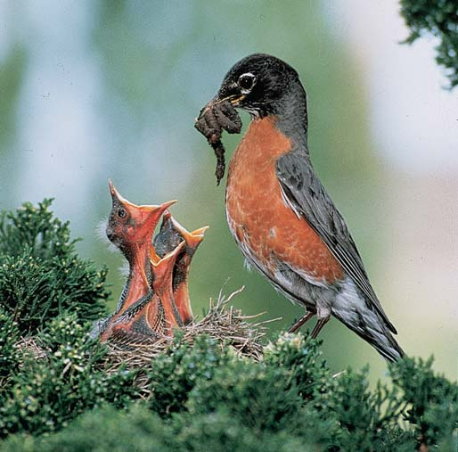

52.6 SELECCIÓN SEXUAL
1142 Capítulo 52
Repaso
■ ¿Cuáles son algunos beneficios de vivir en grupo? ¿Y algunos costos?
■ ¿Cuáles son algunas ventajas de las feromonas? ¿Y algunas limitaciones?
■ ¿Cómo establece dominancia un animal? ¿Qué costos y benefi cios se adjudican a los individuos dominantes en una jerarquía de dominancia?
■ ¿Cuáles son algunos beneficios de la territorialidad?
■ ¿Cómo se compara la danza de las abejas con el lenguaje humano?
OBJETIVO DE APRENDIZAJE
10 Defi nir selección sexual y describir los diferentes tipos de sistemas de apareamiento y los métodos para el cuidado parental.
La selección sexual es un tipo de selección natural para el apareamiento exitoso. Los animales tienen diferencias en su habilidad para competir por parejas. Los individuos con alguna ventaja heredada, como los machos de gran tamaño, tienen una mayor posibilidad de aparearse y pasar sus genes a la siguiente generación. El rasgo benéfi co se vuelve más común en la población con el tiempo. Por tanto, la selección sexual resulta en la ventaja reproductiva que algunos individuos tienen sobre otros de la misma especie y sexo. Para un macho, el éxito reproductivo depende de cuántas hembras pueda fecundar. Para una hembra, el éxito reproductivo depende de cuántos huevos pueda producir durante su vida reproductiva, de la calidad del esperma que la fecunda y de la sobrevivencia de su descendencia hasta la edad reproductiva. Recuerde que el éxito reproductivo de un animal es una medida de su aptitud directa . Es posible distinguir entre selección intrasexual y selección intersexual .
Los animales del mismo sexo compiten por parejas
En la selección intrasexual , los individuos del mismo sexo compiten activamente por parejas. En términos generales, en estas poblaciones abundantes machos compiten por un número limitado de hembras receptivas. La competencia puede asumir la forma de un combate físico. Entre muchas especies, por ejemplo los babuinos y elefantes marinos, el macho más grande tiene la ventaja. A menudo, los machos establecen dominancia de maneras más sutiles. Muchos utilizan presentaciones ornamentales complicadas para establecer dominancia. Por ejemplo, el ciervo macho con los cuernos más grandes puede desalentar a sus competidores. El pájaro macho con el plumaje más espectacular y los colores más encendidos puede tener una ventaja psicológica sobre otros machos competidores. Varios estudios confi rman que los machos con mayor rango en la jerarquía de dominancia se aparean con mayor frecuencia que aquellos con menor rango. Sin embargo, las excepciones demuestran la complejidad de la conducta reproductiva entre algunas especies. Por ejemplo, entre los babuinos con una jerarquía de dominancia defi nida, los machos ubicados más abajo en la jerarquía copulaban con hembras con tanta frecuencia como lo hacían los machos de condición más alta. Sin embargo, los investigadores observaron que los machos dominantes copulaban con más frecuencia con hembras que estaban en el estro , su período fértil.
Las abejas tienen la manera de comunicarse más complicada conocida entre los no mamíferos. Llevan a cabo una serie estereotipada de movimientos corporales denominados danza . La danza revive, en miniatura, el vuelo de la abeja hacia la comida. Cuando una abeja exploradora localiza una rica fuente de néctar, aparentemente observa los ángulos entre la comida, la colmena y el Sol. Luego, la abeja forrajera comunica la dirección y distancia de la fuente de comida en relación con la colmena ( FIGURA 52-17 ). Si la fuente de comida está a menos de 52 m, la exploradora realiza una danza circular , que suele excitar a las demás abejas y las requiere para volar distancias cortas en todas direcciones desde la colmena hasta que encuentren el néctar. Sin embargo, si la comida está lejos, la exploradora hace una danza en ocho cuyo patrón tiene la forma de este número. En la década de 1940, el zoólogo alemán Karl von Frisch fue pionero en el estudio sobre la comunicación de las abejas. Encontró que la danza transporta información sobre la distancia y la dirección. Durante el recorrido recto de la fi gura en ocho, el número y la frecuencia de los contoneos indican la distancia. La orientación de los movimientos indica la dirección de la fuente de comida con respecto a la posición del Sol. Por ejemplo, si la abeja danza en línea recta hacia arriba, el néctar está localizado directamente hacia el Sol. Si la abeja danza 40 grados a la izquierda de la superfi cie vertical del panal, el néctar está localizado 40 grados a la izquierda de una línea entre la colmena y el Sol. La abeja forrajera suele realizar la danza en la colmena oscura sobre la superfi cie vertical del panal. ¿Entonces cómo su audiencia “ve” la danza? Los investigadores han demostrado que la abeja produce sonidos cuando baila. Las señales auditivas aparentemente comunican la posición de la abeja danzarina.
Colmena Danza oscilante
40 °
Comida
Sol
FIGURA 52-17 Animada Danza en ocho de la abeja La exploradora se balancea hacia arriba, indicando que la comida está en dirección al Sol, y se inclina 45º a la izquierda, lo que revela el ángulo de la fuente de alimento con respecto al Sol. La danza se lleva a cabo dentro del panal.
Comportamiento animal 1143
tre algunas especies, la hembra escoge al macho con base en su ubicación en la arena y no en su aspecto. El macho dominante puede ocupar una posición central y ser escogido por la mayoría de las hembras. La hembra escoge a un macho, se aparea con él y luego abandona la arena. El macho se queda para atraer a otras hembras. Los rituales de cortejo aseguran que el pretendiente sea en efecto un macho y que pertenezca a la misma especie. Los rituales proporcionan a la hembra una oportunidad adicional para evaluar al macho. En algunas especies, el cortejo también puede ser necesario como una señal para activar la construcción del nido o la ovulación. Los rituales de cortejo pueden durar segundos, horas, días y a menudo implican una serie de patrones de conducta ( FIGURA 52-18 ). La primera exhibición del macho libera una conducta opuesta de parte de la hembra. Esto, a su vez, libera una conducta adicional del macho y así sucesivamente hasta que la pareja está fi siológicamente lista para copular. Señales específi cas permiten que los rituales de cortejo funcionen como mecanismos de aislamiento reproductivo entre las especies (vea la fi gura 20-3). Un ritual de cortejo extremo ha sido descrito para las arañas de espalda roja, que están estrechamente relacionadas con la araña viuda negra. Durante la copulación, la araña macho, que es más pequeña, se coloca arriba de las mandíbulas de su pareja, que es más grande. Durante 65% de los apareamientos el fi nal es que la hembra devora a su pretendiente. La explicación aparente de este comportamiento es que el macho que asume el riesgo es capaz de copular durante un período más largo y fertilizar más huevos que los machos que no son devorados. Asimismo, la hembra tiene mayor probabilidad de rechazar parejas adicionales.
La selección sexual favorece los sistemas de apareamiento poligíneo
En la mayoría de las especies, los machos realizan poca inversión paternal en su descendencia, aparte de proporcionar el esperma. Los machos aseguran el éxito reproductivo al fecundar a muchas hembras, aumentando la probabilidad de que sus genes serán propagados en múltiples
Los animales seleccionan parejas de calidad
A menudo, las hembras tienen la oportunidad de seleccionar una pareja sexual de entre varios machos. En la selección intersexual , las hembras eligen a sus parejas con base en algún rasgo físico o algún recurso ofrecido por los pretendientes ganadores. El rasgo físico suele indicar calidad genética o buena salud. En muchas especies, el éxito de un macho en encuentros de dominancia con otros machos indica esta calidad a la hembra y ella permite que el macho victorioso la corteje. Algunos machos de menor rango desarrollan estrategias alternativas para atraer a las hembras. Por ejemplo, un macho puede ganar el interés de una hembra al proteger a su bebé, aun cuando no sea suyo. Las hembras de algunas especies eligen a sus parejas con base en aspectos ornamentales. Un pez hembra puede seleccionar al macho de mayor colorido. Las aves hembra a menudo eligen machos con el plumaje más vistoso y colores más brillantes, y los ciervos hembra prefi eren a los machos que poseen cornamentas elaboradas. La expresión de rasgos ornamentales puede proporcionar a la hembra información importante sobre la condición física y capacidad del macho para pelear. Por ejemplo, el tamaño de la cornamenta del venado rojo puede indicar efi cacia para el combate, así como una nutrición idónea y buena salud. Las leonas son atraídas por machos que tienen melenas espesas y oscuras, lo que indica una buena nutrición y abundancia de testosterona (que regula el crecimiento del pelambre y la producción de melanina). Así, en algunas especies las señales ornamentales indican buena salud y buenos genes. Entre los grillos y muchas otras especies de insectos, un macho que hace la corte a menudo ofrece un presente de comida a una posible pareja. Los estudios demuestran que en tanto la comida ofrecida sea mayor en cantidad o más alta en calidad, más posibilidades tiene el macho de ser aceptado. Entre algunas especies de insectos, aves, murciélagos, los machos se reúnen en una pequeña zona de exhibición denominada arena , donde compiten por hembras. Cuando aparece una hembra receptiva, los machos pueden mostrarse excitados y competir por atraer su atención. En-
- El macho gran fragata ( Frigata minor ) infla el saco en su garganta como parte de un ritual de cortejo. Fotografiado en la Isla Navidad en el Pacífico.
Sid Bart/Photo Researchers, Inc
- Garcetas ( Egretta rufescens ) realizando un ritual de cortejo.
© Tianshan/Dreamstime
FIGURA 52-18 Rituales de cortejo Complicados rituales de cortejo ayudan a los animales a determinar que una pareja potencial sea de la misma especie y otorgan a cada animal la posibilidad de evaluar al otro como pareja potencial.
1144 Capítulo 52
necesita el calor del cuerpo de sus padres para sobrevivir, de modo que éstos se turnan para mantenerlos calientes.
Algunos animales cuidan de sus crías
La inversión parental es la contribución que cada padre hace para producir y criar nueva descendencia. El benefi cio de la inversión parental es la mayor probabilidad de que cada descendencia sobreviva. Sin embargo, la mayoría de los animales no invierte tiempo y energía en cuidar a su descendencia porque los costos de la crianza de los hijos son elevados. Por ejemplo, un animal ocupado en alimentar y proteger a su descendencia puede producir menos descendencia adicional. También hay riesgos al proteger a las crías de los depredadores. La selección natural ha favorecido el cuidado parental en especies en las que la hembra engendra pocas crías o se reproduce sólo durante una temporada de apareamiento. El cuidado de los padres es una parte importante de la reproducción exitosa en algunos invertebrados, incluyendo algunos cnidarios (medusas), rotíferos, moluscos y artrópodos (crustáceos, insectos, arañas y escorpiones), y es una práctica común entre los vertebrados ( FIGURA 52-19b, c, d ). Las hembras de muchas especies de vertebrados producen huevos grandes y relativamente pocos. Debido al tiempo y la energía invertidos en la producción de huevos y en portar el embrión en desarrollo, la hembra tiene más que perder que el macho en caso de que la cría no se desarrolle. Así, las hembras tienen más inclinación que los machos a empollar los huevos y a las crías, y son ellas las que suelen invertir más en el cuidado parental. El cuidado por parte de los padres está especialmente sesgado hacia la hembra en los mamíferos porque ella proporciona la leche para nutrir a sus crías. La inversión de tiempo y esfuerzo en el cuidado de las crías suele ser menos ventajosa para un macho (en el supuesto de que la hembra pueda afrontar la tarea por sí sola) debido a que el tiempo dedicado a la crianza de los hijos es tiempo perdido para inseminar a otras hembras. En algunas situaciones, un macho se benefi cia al ayudar a criar a su propia descendencia e inclusive a la de un pariente genético. Las hembras receptivas pueden ser escasas, los territorios de reproducción pueden ser difíciles de establecer o cuidar, y reunir sufi ciente comida puede requerir más esfuerzo del que puede proporcionar un solo padre. En algunos hábitats, las crías necesitan protección de los depredadores o machos caníbales de la misma especie. Por ejemplo, entre los lobos y muchos otros carnívoros, los machos defi enden a las crías y al abastecimiento de comida. Entre muchas especies de peces, el macho se ocupa de las crías. Aparentemente, los costos parentales para los machos son menores de lo que serían para las hembras. Un pez macho debe tener un territorio para atraer a una hembra. Mientras cuida su territorio, el macho también cuida los huevos fecundados. Tener huevos también parece hacer más atractivo al macho para parejas potenciales. Por el contrario, cuando una hembra se encuentra cuidando sus huevos o crías, no es capaz de alimentarse de manera óptima. Como resultado, el tamaño de su cuerpo es menor y su fertilidad se reduce. El ecólogo del comportamiento Bryan D. Neff , de la Universidad de Western Ontario, demostró que el pez sol de branquias azules ( Lepomis macrochirus ) ajusta su nivel de proporcionar cuidado según su grado de certidumbre de que la descendencia es, en efecto, suya. Los machos adultos, denominados parentales, defi enden un nido, atraen hembras y cuidan los huevos y las crías recién nacidas. Algunos machos, denominados machos furtivos (o infi eles), se cuelan en nidos y fecundan huevos durante el desove. Se han desarrollado otros machos furtivos de manera que adquieren características de hembras. El macho parental es engañado al considerar que el intruso es una hembra, permitiéndole el acceso a los huevos ( FIGURA 52-20 ).
descendencias. Así, la selección sexual a menudo favorece la poliginia , un sistema de apareamiento en el que los machos fecundan los huevos de muchas hembras durante una temporada de reproducción. En el sistema de apareamiento conocido como poliandria , una hembra se aparea con varios machos. Los benefi cios pueden incluir presentes de varios machos o el enlistamiento de varios de ellos que ayuden a hacerse cargo de las crías. Datos reunidos en el centro de investigación Jane Goodall en el Parque Nacional Gombe en Tanzania indican que los chimpancés hembra se aparean con machos de su propio grupo, pero cuando son más fértiles, muchas se desplazan hacia comunidades vecinas y copulan con machos menos conocidos. Tal vez estos encuentros sexuales sean una protección contra la endogamia. Los investigadores también conjeturan que el apareamiento con múltiples machos constituye un seguro contra el infanticidio. Los machos no agreden a los bebés de madres con las que han copulado. Estudios recientes indican que las hembras con múltiples parejas son más fértiles y producen más descendencia. La poliandria y la poliginia a veces ocurren en la misma especie. Después del apareamiento, una chinche de agua hembra gigante sujeta una nidada de huevos al lomo de su pareja ( FIGURA 52-19a ). Él cuida los huevos hasta la eclosión. Luego, ella se aparea con otro macho y adhiere la nueva nidada de huevos a su lomo. Sin embargo, si el macho tiene más espacio para huevos, puede aparearse con otra hembra. Aparentemente, en la mayoría de las especies no se sabe quién es el padre de la descendencia. Sin embargo, la crianza de la descendencia de otro macho es una desventaja genética, de modo que los machos de alguna especie pueden intercambiar la persecución de compañeras en favor de la protección de la pareja . El macho vigila a su pareja después de copular para asegurarse de que ella no se aparee con otro macho. Es probable que el comportamiento de vigilancia de la pareja ocurra cuando la hembra es receptiva y tenga huevos que puedan ser fecundados por otro macho. Por ejemplo, los elefantes africanos que son machos dominantes vigilan a una hembra sólo durante la fase de estro, cuando ésta tiene mayor probabilidad de ser fértil. Antes de ese momento, o más tarde en el estro después de que ha ocurrido el apareamiento, los elefantes machos más jóvenes de menor jerarquía pueden copular con la hembra. Un alto costo de la vigilancia de la pareja es que el macho dominante pierde la oportunidad de aparearse con otras hembras. La selección sexual favorece a los machos que inseminan a muchas hembras y producen mucha descendencia. Quizá por esta razón la monogamia, un sistema de emparejamiento en que el macho se aparea con una sola hembra durante una temporada de reproducción, no es común. Menos de 10% de los mamíferos son monógamos. Durante mucho tiempo los investigadores consideraron que la monogamia era común en las aves porque muchas especies forman vínculos de pareja , que son relaciones estables que aseguran una conducta cooperativa en el apareamiento y la cría de los jóvenes. Sin embargo, la evidencia genética demuestra que alguna descendencia es engendrada por machos distintos a los que se hacen cargo de ella. Por ejemplo, pruebas de ADN demuestran que entre los azulejos orientales, de 15% a 20% de los polluelos son engendrados por otros machos. El macho fuera de la pareja contribuye con nuevos genes. Así, la hembra produce descendencia con mayor variabilidad genética, aumentando la posibilidad de que por lo menos algo de su descendencia sobreviva. Algunos investigadores distinguen entre monogamia sexual y monogamia social , en la que los animales establecen vínculos de pareja. La monogamia ocurre en algunas especies, típicamente cuando se requieren machos para proteger y alimentar a las crías. Por ejemplo, el ratón de California es sexual y socialmente monógamo. La descendencia
Comportamiento animal 1145
Neff sugirió que un animal aprende su propio olor (o aspecto) y forma un patrón de cómo deben oler (o verse) sus parientes. Si no coinciden lo sufi ciente, pueden ser rechazados.
Repaso
■ ¿Qué es la selección sexual? ¿Cuáles son algunos factores que infl uyen en la elección de una pareja?
■ ¿En qué condiciones la selección sexual favorece los sistemas de apareamiento poligámico (o poliándrico)? ¿Por qué la monogamia es poco común?
■ ¿Cuáles son algunas ventajas de los rituales de cortejo?
■ ¿Por qué más hembras que machos invierten en el cuidado de su descendencia? Explique en términos de costos, benefi cios y aptitud.
Neff realizó una serie de experimentos en los que colocó machos furtivos en contenedores transparentes de modo que no pudiesen fertilizar huevos pero que el parental pudiese verlos. En respuesta, los parentales redujeron su nivel de protección de los huevos ( FIGURA 52-21 ). Sin embargo, después de la eclosión de éstos, los parentales aumentaron su nivel de cuidado. Aparentemente, pistas olfativas indicaban que estas crías de peces eran en efecto descendencia del parental que los cuidaba. (Olían como debían). En un segundo experimento, Neff intercambió alrededor de un tercio de los huevos entre dos nidos. Los parentales continuaban protegiendo los huevos, pero después de su eclosión, los parentales disminuyeron su nivel de cuidado. Neff demostró que los parentales respondían a pistas olfativas. Por lo menos algo de su descendencia no olía como debía. (Este olor puede ser producido por la orina de la descendencia).
- Una chinche de agua gigante Belostomatidae macho transporta una nidada de huevos en el lomo.
Daniel M. Dennis/Animals Animals
- Un cocodrilo hembra en Sudáfrica transporta a sus crías en su hocico desde su nido hasta el lago Santa Lucía.
M. Reardon/Photo Researchers, Inc.
- Petirrojos adultos invierten energía para alimentar a sus crías.
Dominique Braud/Dembinsky Photo Associates
- Guepardo hembra ( Acinonyx jubatus ) vigilando que sus cachorros coman la gacela Thompson que ella cazó para ellos.
McMurray Photography
FIGURA 52-19 Cuidado de las crías La inversión parental en la descendencia aumenta la probabilidad de que las crías sobrevivan.


1146 Capítulo 52
un costo de aptitud, mientras que el benefi ciario de la conducta altruista saca provecho. ¿Cómo puede la verdadera conducta altruista ser adaptativa si la respuesta del animal disminuye su éxito reproductivo con respecto a los individuos que no exhiben dicha conducta? En 1964, el biólogo evolutivo William D. Hamilton ofreció una explicación plausible. Sugirió que la evolución no distingue entre los genes transmitidos directamente del padre a la descendencia y los que son transmitidos de manera indirecta a través de parientes cercanos. Según Hamilton, la selección natural favorece a los animales que ayudan a un pariente porque la descendencia de éste lleva algo de los alelos del ayudante. La aptitud inclusiva es la suma de la aptitud directa (que puede ser medida por el número de alelos que un animal perpetúa en su descendencia) más la aptitud indirecta (los alelos que ayuda a perpetuar en la descendencia de sus parientes). Es posible medir la ganancia genética potencial derivada de ayudar a la parentela por medio del coefi ciente de consanguinidad, la probabilidad de que dos individuos hereden los mismos alelos poco comunes de un ancestro común reciente. El coefi ciente de consanguinidad para dos animales que no son parientes es 0, mientras que entre un padre y su descendencia este coefi ciente es 0.5, lo que indica que la mitad de sus genes son iguales. El coefi ciente de consanguinidad para hermanos también es 0.5; para los primos hermanos es 0.125. Mientras más alto es el coefi ciente de consanguinidad, es más probable que un animal ayude a un pariente. Hamilton desarrolló un modelo matemático para demostrar cómo un alelo que promueve la conducta altruista puede aumentar su frecuencia en una población. Según la regla de Hamilton , un acto altruista es adaptativo si (1) sus benefi cios de aptitud indirectos son altos para el animal que se benefi cia; (2) los benefi ciarios son parientes cercanos del altruista; y (3) el costo de la aptitud directa para el animal altruista es bajo. Los ecólogos del comportamiento tienen leones identifi cados mediante el análisis de ADN en el Parque Nacional Serengueti y en el cráter Ngorongoro (ambos en Tanzania). Sus descubrimientos confi rman que los leones hermanos que cooperan en manadas tienen una mayor probabilidad de perpetuar sus genes que aquellos que van por su cuenta. Esto es cierto inclusive si el león perpetúa sus genes sólo como representante, a través de su hermano. La selección por parentesco , también denominada selección indirecta, es una forma de selección natural que aumenta la aptitud inclusiva mediante el éxito de la reproducción de parientes cercanos. La sociedad de las abejas constituye un interesante ejemplo de la selección de parentesco. Recuerde que las abejas obreras no se reproducen, pero alimentan las larvas de abejas. Las abejas obreras tienen hasta tres cuartos de sus genes en común con las larvas de abejas. Es por ello que las abejas obreras tienen mayor probabilidad de pasar copias de sus genes a la siguiente generación al criar las larvas de abejas que si produjesen su propia descendencia. Entre algunas aves (como los arrendajos de Florida) los individuos que no se reproducen ayudan a criar a los pequeños. Los nidos hechos por estos ayudantes adicionales, así como los de los padres, producen más crías que los nidos con el mismo número de huevos cuidados sólo por los padres. Los ayudantes que no se reproducen son parientes cercanos que incrementan su propio éxito biológico al asegurar la perpetuación exitosa, aunque indirecta, de sus genes. Factores limitantes como la falta de parejas o territorios pueden impedir que los ayudantes produzcan su propia descendencia.
El comportamiento de ayuda puede tener otras explicaciones
Algunos ecólogos del comportamiento están cuestionando el papel de la selección de parentesco en el comportamiento de ayuda. Uno de los
52.7 COMPORTAMIENTO DE AYUDA
OBJETIVO DE APRENDIZAJE
11 Relacionar los conceptos de aptitud inclusiva y selección de parentesco con el altruismo.
Entre los pavos silvestres y muchas otras especies, los machos subordinados ayudan a los machos dominantes a atraer una pareja, pero los machos subordinados no se reproducen. Si el principal mandato evolutivo de un animal consiste en perpetuar sus genes, habría que preguntarse por qué algunos animales dedican tiempo y energía en ayudar a otros.
La conducta altruista puede explicarse por aptitud inclusiva
En un tipo de conducta cooperativa conocida como altruismo , un individuo se comporta de manera que parece benefi ciar a otros en lugar de a sí mismo, sin posible retribución. De hecho, el ayudante experimenta
FIGURA 52-20 Decepción en el apareamiento Un gran pez sol de branquias azules ( Lepomis macrochirus ) parental (macho adulto) corteja a una hembra ( centro ). Otro macho, con características femeninas, nada cerca de la hembra ( derecha ). El parental no se percata de que el furtivo es un macho rival. En alrededor de 20% de los desoves, un furtivo fertiliza parte de los huevos y luego huye.
Courtesy Dr. Bryan D. Neff
Comportamiento animal 1147
cies, incluidos los perros de la pradera y las ardillas de tierra ( FIGURA
52-22 ). Sin embargo, algunos estudios sugieren una hipótesis opuesta para el comportamiento de vigilancia en otras especies. El biólogo estadunidense Peter A. Bednekoff desarrolló un modelo para explicar cómo la vigilancia puede resultar de una conducta egoísta. Bednekoff observó que para algunas especies los centinelas no corren mayor riesgo que otros miembros del grupo. De hecho, lo contrario
ejemplos de la selección de parentesco consagrado por el tiempo ha sido el comportamiento centinela, la vigilancia para detectar la presencia de depredadores y advertir a los otros miembros del grupo cuando hay amenaza de peligro. Hasta hace poco, los biólogos consideraban que los centinelas estaban en mayor riesgo de depredación, aunque de manera desinteresada se implicaban en un comportamiento riesgoso que benefi ciaba a sus parientes. Esta explicación parece válida para algunas espe-
EXPERIMENTO CLAVE
PREGUNTA: ¿Un pez sol de branquias azules ajusta su nivel de proporcionar cuidado si se percata de que no es el padre genético de los huevos o descendencia que está cuidando?
HIPÓTESIS: El ecólogo del comportamiento Bryan D. Neff conjeturó que el pez sol de branquias azules macho ajusta su cuidado paternal según el nivel al que percibe su paternidad.
EXPERIMENTO: El doctor Neff manipuló pistas visuales y olfativas. En el experimento 1 , el doctor Neff manipuló machos furtivos. Colocó dos contenedores transparentes con machos furtivos cerca de los nidos de 34 parentales (machos adultos) y los dejó ahí durante el desove. Contenedores vacíos se colocaron alrededor de 20 nidos de control. Después de que nacieron los peces se hizo presente un depredador potencial de los huevos (un percasol en un contenedor de plástico transparente), y la conducta defensiva del parental fue observada y cuantifi cada para los grupos experimental y de control. En el experimento 2 , el doctor Neff retiró un tercio de los huevos de los nidos de 20 parentales y los sustituyó con huevos de otros nidos. Se realizaron intercambios de huevos impostores en huevos de 15 parentales control. La conducta defensiva del parental fue observada antes y después de la eclosión de los huevos.
Control Experimento 1. Manipulación de machos furtivos Experimento 2. Manipulación de los huevos
Huevo Joven
Experimental
Cuidado de los padres
Cuidado de los padres
20
0
60
100
40
80
Control Experimental
20
0
60
100
120 120
40
80
RESULTADOS: Experimento 1: Como se observa en el eje y , que mide el nivel de cuidado de los padres, los parentales redujeron su nivel de vigilancia de los huevos. Ocho de los machos en el grupo experimental abandonaron sus nidos y la defensa de los huevos fue signifi cativamente menor en este grupo en comparación con el grupo de control. Sin embargo, después de que los huevos eclosionaron, hubo poca diferencia en el cuidado paternal entre los dos grupos. Experimento 2: Durante la fase de huevos, había poca diferencia en el nivel de cuidado de los padres entre los grupos experimental y de control. Sin embargo, después de que los huevos eclosionaron, los parentales experimentales disminuyeron de manera signifi cativa su nivel de vigilancia del nido.
CONCLUSIÓN: El pez sol de branquias azules ajusta su nivel de cuidado paternal según su nivel de percepción de paternidad. En el experimento 1 , los parentales proporcionaron menos cuidado cuando se percataron de que los huevos hubieran podido ser fertilizados por machos furtivos. Después de que los huevos eclosionaron, pistas olfativas indicaron que la descendencia era, en efecto, de ellos y su nivel de cuidado aumentó. En el experimento 2 , los parentales cuidaron los huevos a pesar de que algunos fueron intercambiados. Sin embargo, después de que los huevos eclosionaron, pistas olfativas de la descendencia indicaron que no se trataba de la descendencia propia del parental. El nivel de cuidado de los padres disminuyó en forma signifi cativa.
Fuente: Neff , B. D. Nature , vol. 422, pp. 716-719, 17 de abril de 2003.
FIGURA 52-21 Decisiones sobre el cuidado de los padres
1148 Capítulo 52
Algunos animales ayudan a no familiares
Ocasionalmente, un animal ayuda a un no familiar en una pelea, lo cría e incluso comparte comida. El biólogo evolutivo Robert L. Trivers, de la Universidad Rutgers, explicó esta conducta en 1971 con su hipótesis del altruismo recíproco . Según estas hipótesis, algunos animales ayudan a un no familiar sin obtener un benefi cio inmediato, pero en un momento posterior el animal que fue ayudado paga la deuda. De esta manera, el ayudante original experimenta un benefi cio neto en aptitud. Un murciélago vampiro que acaba de alimentarse regurgita sangre para murciélagos hambrientos que comparten el lugar de descanso. Si un murciélago no comparte sangre con un vecino que lo ha alimentado en el pasado, es probable que el “tramposo” no sea ayudado en el futuro.
Repaso
■ ¿Cómo explica la selección de parentesco la evolución de la conducta altruista?
■ ¿Qué otras hipótesis podrían explicar la conducta cooperativa?
52.8 CULTURA EN LAS SOCIEDADES DE VERTEBRADOS
OBJETIVO DE APRENDIZAJE
12 Contrastar una sociedad de vertebrados con una sociedad de insectos sociales, dar ejemplos de transmisión de la cultura y describir brevemente la sociobiología.
Las sociedades de vertebrados no suelen tener algo comparable con las castas física y conductualmente especializadas de las abejas u hormigas. Una excepción es la rata topo desnuda del sureste de África, un roedor cuya estructura social es bastante semejante a la de los insectos sociales. Aunque la mayoría de las sociedades de vertebrados parecen más simples que las de insectos, también son más fl exibles. Las sociedades de vertebrados comparten una amplia gama y ductilidad de conductas potenciales y pueden modifi car de manera efi caz la conducta para afrontar retos ambientales.
Algunos vertebrados transmiten cultura
La ductilidad conductual de los vertebrados hace posible la transmisión de cultura en algunas especies de aves y mamíferos. La cultura es una conducta común a una población, aprendida de otros miembros del grupo y transmitida de una generación a otra. La cultura no se hereda. Es mantenida por el aprendizaje social ; por ejemplo, mediante la imitación o la enseñanza. Entre los cetáceos (ballenas, delfi nes, marsopas) han sido descritas alrededor de 17 conductas que pueden considerarse culturales. Por ejemplo, las orcas hembra enseñan a su descendencia a cazar focas según la costumbre de su grupo particular. Las orcas también tienen dialectos locales que han sido documentados por lo menos en seis generaciones, lo que sugiere que han pasado del padre a la descendencia. Se han mantenido dialectos por separado incluso cuando varias poblaciones de orcas interactúan socialmente. Los delfi nes nariz de botella son bien conocidos por su habilidad para aprender a imitar. Los ecólogos del comportamiento han documentado prácticas de forrajeo que parecen culturales; es decir, transmitidas por aprendizaje social.
puede ser cierto y los centinelas podrían realmente tener una ventaja. Al detectar primero a los depredadores, los centinelas pueden escapar más rápido. Estudios sobre el comportamiento centinela en la mangosta africana, conocida popularmente como suricato, apoyan el modelo de Bednekoff . Durante 2000 de observaciones de investigación, ningún centinela fue muerto. De hecho, los investigadores concluyeron que la vigilancia es una conducta egoísta en las poblaciones de suricatos porque los centinelas podían escapar rápidamente hacia sus madrigueras cercanas. Esta investigación es un recordatorio importante de que es riesgoso para los biólogos generalizar los signifi cados de conductas sociales complejas de una especie a otra. Muchas explicaciones son posibles. A la larga, los ayudantes pueden obtener benefi cios directos en seguridad y éxito reproductivo. Por ejemplo, entre algunas especies, a los animales más jóvenes que ayudan se les permite permanecer en el grupo social y obtener los benefi cios de la protección del grupo. Estos ayudantes también son posicionados para apropiarse de territorios y hembras cuando los miembros más viejos del grupo mueren.
FIGURA 52-22 Selección de parentesco en perros de la pradera Los miembros de menor rango de este grupo de roedores actúan como centinelas, poniendo en riesgo sus propias vidas al exponerse fuera de sus madrigueras. Sin embargo, al proteger a sus hermanos, aseguran que los genes compartidos en común serán perpetuados en la población.
© Momatiuk-Eastcott/Corbis
Comportamiento animal 1149
La sociobiología explica el comportamiento social humano en términos de la adaptación
La sociobiología se enfoca en la evolución del comportamiento social por medio de la selección natural. En su notable libro, Sociobiology : Th e New Synthesis , publicado en 1975, Edward O. Wilson combinó principios de genética de poblaciones, evolución y conducta animal para presentar una visión exhaustiva de la evolución del comportamiento social. Así como Darwin y muchos otros biólogos del pasado, Wilson sugirió que la conducta humana puede ser estudiada en términos evolutivos. Muchos de los conceptos analizados en este capítulo, como la inversión paternal en el cuidado de las crías, están basados en contribuciones hechas por Wilson y otros sociobiólogos. La obra de Wilson infl uyó sobremanera el desarrollo de la ecología del comportamiento, la psicología evolutiva y la antropología evolutiva. La sociobiología ha sido controvertida, por lo menos en parte, debido a su aplicación a la conducta humana y las posibles implicaciones éticas de ello. Algunos críticos se han quejado de que según la sociobiología la conducta humana no puede ser sufi cientemente fl exible para permitir mejoras sustanciales en la calidad de las vidas sociales de las personas. Sin embargo, los sociobiólogos coinciden con sus críticos en que la conducta humana es fl exible. Por lo menos algo del debate se centra en el grado en que la conducta humana está genéticamente determinada y la medida en que puede ser modifi cada. Como los sociobiólogos reconocen, las personas pueden, mediante la cultura, cambiar en pocos años sus formas de vida más profundamente de lo que podría un enjambre de abejas o una manada de babuinos en cientos de generaciones de evolución genética. Esta capacidad para hacer cambios está determinada sin duda por la genética, lo cual es un gran don. Cómo la usan y qué logran con ella los seres humanos no es sólo un regalo, sino una responsabilidad de la cual dependen su propio bienestar y la sobrevivencia de otras especies.
Repaso
■ ¿Cómo difieren las sociedades de vertebrados de las de insectos sociales?
■ ¿Cuáles son algunos ejemplos de cultura?
■ ¿Qué es la sociobiología?
Enseñar es una forma efi caz de aprendizaje social. Si los animales adultos pueden enseñar a los jóvenes, la información crítica puede transmitirse rápidamente de una generación a la siguiente. Los investigadores Alex Th ornton y Katherine McAuliff e, ambos de la Universidad de Cambridge, reportaron que los suricatos ayudantes enseñan a sus pupilos habilidades para capturar presas. Los suricatos se alimentan de una variedad de animales, muchos difíciles de someter. Algunos, como los escorpiones, son potencialmente peligrosos. Los cachorros no pueden encontrar y capturar sus propias presas. En lugar de eso, los cachorros emiten llamadas implorantes que inducen a los ayudantes a alimentarlos. Los ayudantes supervisan y estimulan a los cachorros a manejar a su presa de manera efi caz. A medida que los cachorros crecen, sus llamadas implorantes cambian. En respuesta, los ayudantes modifi can su enseñanza, dando a los cachorros la oportunidad de practicar una gama más amplia de habilidades. Los ayudantes presentan gradualmente las presas vivas a los cachorros. Estudios recientes de primates no humanos demuestran que algunos grupos desarrollan costumbres locales que enseñan a su descendencia. Al usar datos proporcionados por investigadores en siete sitios de investigación de chimpancés, los estudiosos del comportamiento animal identifi caron 39 conductas de chimpancés que consideraron variantes culturales. Éstas incluían varias formas de utilizar herramientas, rituales de cortejo y técnicas de crianza. Cada una de estas costumbres locales fue aprendida de otros chimpancés en la población, y las costumbres variaron entre poblaciones diferentes. Por ejemplo, los chimpancés en la parte occidental del río Sassandra-N’Zo usan martillos de piedra para romper nueces de coula. Los investigadores han fotografi ado madres chimpancés enseñando esta conducta a su descendencia. Sólo a unos kilómetros de ahí, en la parte oriental del río, los chimpancés no rompen nueces, inclusive si las hay disponibles. Cuando un chimpancé migra y se une a una nueva población, puede transmitir conocimiento aprendido en su cultura previa. De esta manera, las costumbres se dispersan de una población a otra. A medida que los investigadores continúan estudiando la variación cultural entre poblaciones de chimpancés, aprendiendo cada vez más sobre los parientes más cercanos de los humanos, es importante recordar que la capacidad de aprender estas conductas es producto de la selección natural. Las conductas que son mantenidas son adaptativas para estos animales en su ambiente. Estudiar la cultura de los primates no humanos aporta conocimientos sobre los orígenes evolutivos de la cultura humana. La sociedad humana está basada en gran medida en la transmisión simbólica de la cultura por medio del lenguaje hablado y escrito.
52.1 (página 1128)
1 Distinguir entre causas próximas y últimas del comportamiento, y aplicar los conceptos de causa última y el análisis de costo-benefi cio para decidir si una conducta particular es adaptativa.
■ El comportamiento es lo que hace un animal y cómo lo hace, usualmente en respuesta a estímulos en su ambiente. Las causas próximas del comportamiento, como procesos genéticos, de desarrollo y fi siológicos permiten que el animal lleve a cabo una conducta específi ca. Las causas próximas responden las preguntas del cómo . Las causas últimas son las explicaciones evolutivas de por qué ocurren ciertas conductas.
■ Para determinar si una conducta es adaptativa puede usarse el análisis de costo benefi cio . Los benefi cios contribuyen a la aptitud directa , el éxito reproductivo de un animal medido por el número de descendencia viable. Si los benefi cios son superiores a los costos, la conducta es adaptativa.
2 Describir las interacciones entre herencia, ambiente y maduración en la conducta animal.
■ El comportamiento resulta de la interacción de genes (comportamiento innato) y factores ambientales. La capacidad para la conducta es heredada, aunque la conducta es modifi cada en respuesta a experiencia ambiental.
■ Un organismo debe estar maduro, fi siológicamente listo para producir una conducta dada, antes de poder realizar ese patrón de conducta. Caminar y muchas otras conductas que se ven como automáticas son programas motores , secuencias coordinadas de acciones musculares.
■ Un patrón conductual es una conducta automática que, una vez activada por estímulos sensoriales, continúa hasta completarse sin importar la retroalimentación sensorial. Un patrón conductual puede ser activado por un estímulo signo , o liberador , específi co no aprendido.
■ ■ RESUMEN: ENFOQUE EN LOS OBJETIVOS DE APRENDIZAJE
1150 Capítulo 52
y a menudo están estrechamente relacionados. En algunas especies, la organización social asegura mayor éxito reproductivo. Muchas sociedades animales están caracterizadas por medios de comunicación, cooperación, división del trabajo y una tendencia a permanecer juntos. Los benefi cios incluyen cooperación en el forrajeo o caza y en la defensa de los depredadores. Los costos incluyen un incremento en la competencia por comida y hábitats, así como mayores riesgos de atraer depredadores y transmitir enfermedades. 8 Describir modos comunes de comunicación animal, incluyendo la señalización por feromonas.
■ La comunicación animal implica el intercambio de señales reconocibles mutuamente, las cuales pueden ser eléctricas, táctiles, visuales, auditivas o químicas. Las feromonas son señales químicas que transportan información entre los miembros de una especie. 9 Describir los costos y benefi cios de las jerarquías de dominancia y de la territorialidad.
■ Una jerarquía de dominancia es una clasifi cación de la condición dentro de un grupo en el que los miembros más dominantes reciben benefi cios (como comida o parejas) por parte de subordinados, a menudo sin mostrar una conducta agresiva. La condición social reduce las costosas peleas físicas.
■ Los animales a menudo habitan una distribución inicial , una zona geográfi ca que rara vez abandonan aunque no necesariamente defi enden. Un área defendida dentro de una distribución inicial se denomina territorio y la conducta defensiva es territorialidad . Los costos de la territorialidad incluyen tiempo y energía gastados en delimitar y defender un territorio, así como los riesgos de pelear por él. Los benefi cios incluyen los derechos a la comida en el territorio y la reducción de confl ictos entre los miembros de una población.
52.6 (página 1142)
10 Defi nir selección sexual y describir los diferentes tipos de sistemas de apareamiento y los métodos para el cuidado parental.
■ La selección sexual , un tipo de selección natural, ocurre cuando los individuos varían en su habilidad para competir por parejas. Los individuos con ventajas reproductivas son seleccionados en lugar de otros del mismo sexo y especie. En la selección intrasexual , los animales del mismo sexo compiten activamente por parejas.
■ En la selección intersexual , las hembras pueden escoger a sus parejas con base en la dominancia, obsequios, ornamentos o exhibiciones de cortejo. Los machos de algunas especies se reúnen en una arena , una pequeña área en la que compiten por hembras. Los rituales de cortejo aseguran que el macho sea un miembro de la misma especie y permiten que la hembra valore la calidad del macho.
■ La selección sexual a menudo favorece la poliginia , un sistema de apareamiento en el que el macho copula con muchas hembras. En la poliandria , una hembra se aparea con varios machos. La monogamia , el apareamiento con una sola pareja durante una temporada de reproducción, es menos común. Entre varias especies, los machos se ocupan de la vigilancia de la pareja , especialmente cuando la hembra es más fértil, para impedir que otros machos fertilicen sus huevos.
■ Un vínculo de pareja es una relación estable entre un macho y una hembra que puede implicar una conducta cooperativa al aparearse y en la crianza de los jóvenes. La inversión parental en el cuidado de los huevos y la progenie aumenta la probabilidad de que ésta sobreviva. Una alta inversión parental suele ser menos ventajosa para el macho que para la hembra.
52.2 (página 1131)
3 Analizar la importancia adaptativa de la habituación, la impronta, el condicionamiento clásico, el condicionamiento operante y la cognición.
■ El aprendizaje es un cambio en la conducta que resulta de la experiencia. La habituación es un tipo de aprendizaje en que un animal aprende a ignorar un estímulo repetido e irrelevante, de modo que pueda enfocarse en encontrar comida y llevar a cabo las otras actividades de la vida diaria.
■ La impronta establece un vínculo padre-descendencia durante un período crítico temprano en el desarrollo y asegura que la descendencia reconozca a su madre.
■ En el condicionamiento clásico se forma una asociación entre alguna función corporal normal y un nuevo estímulo. Este tipo de aprendizaje permite que un animal haga una asociación entre dos estímulos.
■ En el condicionamiento operante , un animal aprende una conducta para recibir refuerzo positivo o evitar castigo. Este tipo de aprendizaje es importante en muchas situaciones naturales; por ejemplo, las gaviotas jóvenes perfeccionan su conducta de picoteo para obtener comida.
■ La cognición es el proceso de adquirir conocimiento; incluye el pensamiento, procesamiento de información, aprendizaje, razonamiento y conciencia de pensamientos, percepciones y el yo. El aprendizaje perceptivo es la capacidad de adaptar experiencias pasadas para resolver un problema nuevo que puede implicar estímulos diferentes.
52.3 (página 1134)
4 Proporcionar ejemplos de ritmos biológicos y describir algunos de los mecanismos fi siológicos responsables de aquéllos.
■ Es adaptativo para los procesos metabólicos y la conducta de un organismo estar sincronizado con cambios cíclicos en el ambiente. En muchas especies, los procesos y las actividades fi siológicas siguen ritmos circadianos , que son ciclos diarios de actividad.
■ Los animales diurnos son más activos durante el día; los animales nocturnos , en la noche; y los animales crepusculares , al amanecer o en el ocaso. Algunos ritmos biológicos refl ejan el ciclo lunar ; por ejemplo, los cambios en la marea debidos a variaciones en la fase de la luna.
■ Muchos ritmos biológicos están regulados por mecanismos internos de sincronización que sirven como relojes biológicos . En los mamíferos, el reloj maestro está ubicado en el núcleo supraquiasmático (NSQ) en el hipotálamo. 5 Analizar costos y benefi cios de la migración, y distinguir entre orientación y navegación direccionales.
■ La migración es un viaje periódico de larga distancia de un sitio a otro. Las causas próximas de la migración incluyen respuestas fi siológicas que son activadas por cambios ambientales. Las causas últimas de la migración incluyen el benefi cio de alejarse de un área que estacionalmente se vuelve demasiado fría, seca o sin comida hacia un área más hospitalaria. Los costos de la migración incluyen tiempo, energía y un mayor riesgo de depredación.
■ La orientación direccional es viajar en una dirección específi ca y requiere el sentido de brújula , un sentido de dirección. Muchos animales migratorios usan el Sol para orientarse.
■ La navegación requiere tanto el sentido de brújula como el sentido de mapa , tener conciencia de la ubicación. Las aves que navegan en la noche usan las estrellas como guía. Las aves y muchos otros animales también usan el campo magnético de la Tierra para navegar.
52.4 (página 1136)
6 Defi nir comportamiento de forrajeo óptimo y explicar de qué manera es adaptativo.
■ El forrajeo óptimo , la estrategia más efi caz para que un animal consiga comida, puede mejorar el éxito reproductivo.
52.5 (página 1137)
7 Analizar el comportamiento social en términos de costos y benefi cios, y comparar diferentes tipos de grupos sociales, incluyendo sociedades de insectos sociales.
■ El comportamiento social es la interacción de dos o más animales, usualmente de la misma especie. Una sociedad organizada es un grupo de individuos que cooperan activamente, que pertenecen a la misma especie
McMurray Photography
Comportamiento animal 1151
52.7 (página 1146)
11 Relacionar los conceptos de aptitud inclusiva y selección de parentesco con el altruismo.
■ El altruismo es un tipo de conducta cooperativa en la que un individuo parece comportarse de manera que benefi cie a otros en lugar de a sí mismo. La aptitud inclusiva es la suma de la aptitud directa y la aptitud indirecta de un individuo (número de descendientes de un pariente). Este concepto sugiere que la selección natural favorece a los animales que ayudan a un pariente porque ésta es una forma indirecta de perpetuar algunos de los alelos del ayudante.
■ Según la regla de Hamilton , un acto altruista es adaptativo si sus benefi cios de aptitud indirecta son altos para los animales que son ayudados, si los benefi ciarios son parientes cercanos del altruista y si el costo de la aptitud directa para el altruista es bajo.
■ La selección de parentesco es un tipo de selección natural que incrementa la aptitud inclusiva por medio de la reproducción exitosa de parientes cercanos. Algunos tipos de conducta cooperativa pueden aumentar la aptitud directa del ayudante.
■ En un tipo de conducta cooperativa conocida como altruismo recíproco , el ayudante no se benefi cia de inmediato, pero es asistido más tarde por el animal al que ayudó.
52.8 (página 1148)
12 Contrastar una sociedad de vertebrados con una sociedad de insectos sociales, dar ejemplos de transmisión de la cultura y describir brevemente la sociobiología.
■ En comparación con las sociedades de insectos, las sociedades de vertebrados son más fl exibles y el papel de los individuos está menos estrechamente defi nido. Algunas especies de aves y mamíferos desarrollan cultura , una conducta aprendida común a una población que es transmitida de una generación a la siguiente. Por ejemplo, las orcas tienen dialectos locales que son pasados del padre a la descendencia. La transmisión simbólica de la cultura es importante en sociedades humanas.
■ La sociobiología se enfoca en la evolución de la conducta humana por medio de la selección natural.
Las respuestas de un organismo a señales provenientes de su ambiente son (a) su conducta (b) su cultura (c) su conducta última (d) sus liberadores (e) sus programas motores
Un patrón de conducta es ocasionado por (a) un programa motor (b) un estímulo signo (c) un liberador último (d) a, b y c (e) b y c
Una forma de aprendizaje en la que un animal forma un vínculo intenso con un objeto en movimiento (usualmente su pariente) a las pocas horas de nacer es (a) condicionamiento clásico (b) condicionamiento operante (c) impronta (d) aprendizaje perceptivo (e) inversión parental
Los sentidos de brújula y de mapa son necesarios para (a) navegación (b) migración (c) orientación direccional (d) navegación y migración (e) la acción de relojes biológicos
En el forrajeo óptimo, (a) los animales siempre cazan en grupos sociales (b) un animal obtiene comida en la forma más efi caz (c) los animales rara vez pueden ser selectivos (d) grupos de cinco a siete animales tienen más éxito (e) los animales suelen tener más éxito cuando cazan solos
Las señales químicas que transportan información entre miembros de una especie son (a) feromonas (b) hormonas (c) neurotransmisores (d) arenas (e) neuropéptidos
Los benefi cios de la territorialidad incluyen (a) el derecho a defender una distribución inicial (b) mayor potencial para la monogamia (c) inversión de energía para delimitar y defender un área (d) un incremento en el éxito reproductivo (e) vínculos de pareja
La selección sexual (a) ocurre principalmente entre animales que practican la poliandria (b) ocurre cuando los animales son muy semejantes en su capacidad para competir por parejas (c) resulta en animales que tienen menor aptitud directa (d) ocurre principalmente entre animales que practican la poliginia (e) es una forma de selección natural
En la mayoría de las especies, es menos probable que la elección de una pareja esté infl uida por (a) exhibiciones ornamentales como las cornamentas (b) fi delidad del macho (c) obsequios (d) el comportamiento de cortejo (e) dominancia
La conducta que parece no ser recompensada; es decir, un individuo parece actuar en benefi cio de los demás en lugar del suyo propio se conoce como (a) mutualismo (b) conducta de ayuda (c) altruismo recíproco (d) aptitud inclusiva (e) altruismo
La selección de parentesco (a) incrementa la aptitud inclusiva por medio del éxito reproductivo de parientes cercanos (b) es una manera de perpetuación de los genes de no familiares (c) explica algunas formas de migración (d) suele implicar la vigilancia de la pareja (e) implica exhibiciones ornamentales y el uso de una arena
La cultura (a) es común entre grupos de invertebrados (b) no varía en la misma especie (c) es conducta aprendida de otros miembros del grupo y compartida por miembros de una población (d) tiene un intenso componente genético en los primates (e) es un derivado compartido del carácter de los humanos
EVALÚE SU COMPRENSIÓN
Los ecólogos del comportamiento han demostrado que las crías de salamandras tigre pueden volverse caníbales y devorar a otras salamandras. Los investigadores observaron que las salamandras caníbales preferían devorar a salamandras que no eran sus familiares en lugar de sus primas y preferían comer a sus primos en lugar de sus hermanos y hermanas. Explique esta conducta con base en lo que ha aprendido de este capítulo.
¿Cuál es la diferencia entre la sociedad de un insecto social y la sociedad humana? ¿Cuáles son las semejanzas entre la transmisión de información por medio de la herencia y la cultura?
VÍNCULO CON LA EVOLUCIÓN. ¿Cuál podría ser el valor adaptativo de la migración de las tortugas de mar? Considere cómo este valor adaptativo ha cambiado si, como resultado de las actividades
PENSAMIENTO CRÍTICO
1152 Capítulo 52
humanas, la migración coloca ahora a las tortugas de mar en mayor riesgo comparado con el que tendrían si sus hábitats estuviesen restringidos a un único sitio. Analice los posibles mecanismos evolutivos por los cuales la conducta de esta especie podría (o no) adaptarse a estas presiones ambientales. ¿Qué esfuerzos de conservación deben tomarse para incrementar la probabilidad de una migración exitosa?
ANÁLISIS DE DATOS. Observe el diagrama (fi gura 52-11) e identifi que los grupos con mayor probabilidad de estar hambrientos al fi nal de un día de cacería durante períodos en los que hay escasez de comida. Establezca una hipótesis para explicar por qué estos grupos cazan como lo hacen.
ANÁLISIS DE DATOS. Observe las dos gráfi cas (a la derecha). ¿En qué experimento los parentales en el grupo experimental cuidan con más esmero los huevos? ¿En qué experimento los parentales en el grupo experimental cuidan de manera más cercana a las crías? Explique estas diferencias.
Preguntas adicionales están disponibles en CengageNOW en www.cengage.com/login.
Ingesta diaria de comida per cápita (kg/día/hembra)
1
2
3
4
5
6
7
8
9
10
11
12
1 2 3 Número de hembras por grupo 4 5 6 7
Presas abundantes
Presas escasas
Control Experimento 1. Manipulación de machos furtivos
Huevo Joven
Experimental
Cuidado de los padres
20
0
60
100
40
80
120
Experimento 2. Manipulación de los huevos
Cuidado de los padres
Control Experimental
20
0
60
100
120
40
80
1153
53 Introducción a la ecología: ecología de poblaciones
CONCEPTOS CLAVE
53.1 Una población puede ser descrita en términos de su densidad, dispersión, tasas de natalidad y mortalidad, tasa de crecimiento, sobrevivencia y estructura de edad. 53.2 Los cambios en el tamaño de la población son provocados por natalidad, mortalidad, inmigración y emigración. 53.3 El tamaño de la población puede ser infl uido por factores dependientes de la densidad y factores independientes de la densidad. 53.4 Las características de historia de la vida de una población son adaptaciones que afectan la capacidad de los individuos para sobrevivir y reproducirse. 53.5 Una metapoblación consta de dos o más poblaciones locales con dispersión que ocurre entre ellas. 53.6 La estructura de la población humana difi ere entre países de maneras que están relacionadas esencialmente con diferencias en el nivel de desarrollo.
L
a ciencia de la ecología es el estudio de cómo los organismos vivos y el ambiente físico interactúan en una inmensa y complicada red de relaciones. Los biólogos denominan factores bióticos a las interacciones entre los organismos y factores abióticos a sus relaciones con el ambiente físico no viviente. Los factores abióticos incluyen precipitación, temperatura, pH, viento y nutrientes químicos. Los ecólogos plantean hipótesis para explicar fenómenos como la distribución y abundancia de la vida, los papeles ecológicos de especies específi cas, las interacciones entre especies en comunidades y la importancia de los ecosistemas en al mantenimiento de la salud de la biosfera. Luego, prueban tales hipótesis. El enfoque de la ecología puede ser local o global, específi co o generalizado, dependiendo de las preguntas que esté planteando e intentando contestar un ecólogo. La ecología es el campo más amplio de la biología, con vínculos explícitos con la evolución y cualquier otra disciplina biológica. Incluye estudios sobre transmisión de información entre organismos y analiza la transferencia de energía para la vida. Su universalidad abarca temas que no son parte tradicional de la biología. Ciencias de la Tierra, geología, química, oceanografía, climatología y meteorología son de suma importancia para la ecología, especialmente cuando los ecólogos analizan el ambiente abiótico del planeta Tierra. Debido a que los humanos forman
Una población de amapolas mexicanas. Las amapolas mexicanas ( Eschsolzia mexicana ), que prosperan en laderas pedregosas del desierto, fl orecen después de las lluvias de invierno.
Jim Brandenburg/Minden Pictures
1154 Capítulo 53
interactúa con el ambiente; por ejemplo, la manera en que los individuos en una población compiten por comida u otros recursos, y cómo la depredación, la enfermedad y otras presiones ambientales afectan a la población. El crecimiento de la población, sea de bacterias, arces o jirafas, no puede aumentar de manera indefi nida debido a estas presiones ambientales. Aspectos adicionales de las poblaciones que son de interés para los biólogos son su éxito o fracaso reproductivo (extinción), su evolución, sus condiciones genéticas y la manera en que afectan el funcionamiento normal de las comunidades y ecosistemas. Los biólogos en disciplinas aplicadas, como silvicultura, agronomía (la ciencia de los cultivos) y gestión de la vida silvestre, deben comprender la ecología poblacional para administrar poblaciones de importancia económica; por ejemplo, bosques, campos de cultivo, animales de caza o peces. La comprensión de la dinámica de la población de especies en peligro y amenazadas desempeña un papel crucial en los esfuerzos por impedir el incremento de poblaciones de plagas a niveles que provoquen importantes impactos económicos y de salud.
La densidad y la dispersión son características importantes de las poblaciones
El concepto de tamaño de la población tiene sentido sólo cuando las fronteras de las poblaciones están defi nidas. Por ejemplo, considere la diferencia entre 1000 ratones en 100 hectáreas y 1000 ratones en 1 hectárea. A menudo la población es demasiado grande para poder estudiarla completamente. Los investigadores analizan una población así al tomar muestras de una parte de ella y luego expresando la población en términos de densidad. Algunos ejemplos incluyen la cantidad de dientes de león por metro cuadrado de césped, el número de moscas de agua por litro de agua de un estanque o el número de pulgones por centímetro cuadrado de hoja de calabaza. Entonces, la densidad de población es el número de individuos de una especie por unidad de área o volumen en un momento dado. Los diversos ambientes varían en la densidad de población de cualquier especie que pueden mantener. Esta densidad también puede variar en un solo hábitat de estación en estación o de año en año. Por ejemplo, los urogallos son aves terrestres de caza cuyas poblaciones son gestionadas para la cacería. Considere dos poblaciones de urogallos en los páramos sin árboles del norte de Escocia, en sitios separados por sólo 2.5 km de distancia. En un lugar la densidad de población permaneció estacionaria durante un período de tres años, pero en el otro sitio casi se duplicó en los dos primeros años y luego disminuyó a su densidad inicial en el tercer año. La razón fue quizá una diferencia en el hábitat. Los investigadores habían quemado experimentalmente el área donde la densidad de población aumentó inicialmente y luego decreció. Después de la quema se produjeron jóvenes brotes de brezo que proporcionaron comida nutritiva para los urogallos ( Calluna vulgaris ). Así, la densidad de población puede ser determinada en gran parte por factores bióticos o abióticos en el ambiente que son externos a los individuos en la población. Los individuos en una población a menudo exhiben patrones característicos de dispersión , o espaciamiento, mutua. Los individuos pueden ser separados en una dispersión aleatoria, agrupada o uniforme. La dispersión aleatoria ocurre cuando los individuos en una población son separados a lo largo de un área de manera que no están relacionados con la presencia de otros ( FIGURA 53-1a ). De los tres tipos principales de dispersión, la aleatoria es la menos común y difícil de observar en la naturaleza, lo que ha llevado a algunos ecólogos a cuestionar su existencia. Por ejemplo, algunas veces, árboles de la misma especie parecen
parte de la red de vida de la Tierra, todas sus actividades, incluidas las económicas y políticas, tienen profundas implicaciones ecológicas. La ciencia ambiental , una disciplina científi ca vinculada con la ecología, se enfoca en la forma en que los humanos interactúan con el ambiente. Como aprendió en el capítulo 1, la mayoría de los ecólogos están interesados en los niveles de organización biológica, incluyendo el nivel del organismo individual y los que están por arriba de él: población, comunidad, ecosistema, paisaje y biosfera. Cada nivel tiene su composición, estructura y funcionamiento característicos propios. Un individuo pertenece a una población , un grupo que consta de miembros de la misma especie que viven juntos al mismo tiempo en un área prescrita. Las fronteras del área están defi nidas por el ecólogo que desarrolla un estudio particular. Un ecólogo de poblaciones podría estudiar una población de microorganismos, animales o plantas, como las amapolas mexicanas en la fotografía, para ver cómo los individuos de esa población interactúan entre sí, con otras especies en la comunidad y con su ambiente físico. En este capítulo se inicia el estudio de los principios ecológicos, enfocándose en el estudio de poblaciones como sistemas que funcionan y termina con un análisis de la población humana. En capítulos subsecuentes se analizan las interacciones entre poblaciones diferentes dentro de comunidades (capítulo 54), los intercambios dinámicos entre las comunidades y sus ambientes físicos (capítulo 55), las características de los ecosistemas biológicos más importantes de la Tierra (capítulo 56), y la diversidad biológica y la biología de la conservación (capítulo 57).
53.1 CARACTERÍSTICAS DE LAS POBLACIONES
OBJETIVO DE APRENDIZAJE
1 Defi nir densidad y dispersión de la población, y describir los tipos principales de dispersión de la población.
Las poblaciones exhiben características distintivas de aquellas de los individuos de los que están integradas. Algunas características analizadas en este capítulo que defi nen a las poblaciones son la densidad y la dispersión de población, las tasas de nacimiento y mortalidad, las tasas de crecimiento, la sobrevivencia y la estructura de edad. Aunque las comunidades constan de todas las poblaciones de todas las diferentes especies que viven juntas dentro de un área, las poblaciones tienen propiedades que no tienen las comunidades. Por ejemplo, las poblaciones comparten un acervo génico (vea el capítulo 19). En consecuencia, la selección natural puede provocar cambios en las frecuencias de los alelos en las poblaciones. Como resultado, los cambios en las frecuencias de los alelos que resultan de la selección natural ocurren en las poblaciones. Así, la selección natural actúa directamente para producir cambios adaptativos en las poblaciones y sólo afecta indirectamente el nivel de la comunidad. La ecología de poblaciones considera el número de individuos de una especie particular que se encuentran en un área y la dinámica de la población. La dinámica de la población es el estudio de los cambios en las poblaciones: cómo y por qué las cifras aumentan o disminuyen con el tiempo. Los ecólogos de poblaciones intentan determinar los procesos comunes a todas las poblaciones. Estudian de qué manera una población
Introducción a la ecología: ecología de poblaciones 1155
agrupada y uniforme al probar estadísticamente las diferencias respecto de una dispersión aleatoria supuesta). La dispersión aleatoria puede ocurrir con poca frecuencia debido a que importantes factores ambientales que afectan la dispersión no suelen ocurrir al azar. Las larvas del escarabajo de la harina en un contenedor de la misma están dispersas en forma aleatoria, pero su ambiente (harina) es extraordinariamente homogéneo. Quizá el espaciamiento más común es la dispersión agrupada , también conocida como distribución agregada o agregación , que ocurre cuando los individuos están concentrados en partes específi cas del hábitat. La dispersión agrupada a menudo resulta de la agregación de recursos en el ambiente. También ocurre entre animales debido a la presencia de grupos familiares y parejas, y entre plantas debido a la dispersión limitada de semillas o a la reproducción asexual. Por ejemplo, toda una arboleda de álamos puede originarse asexualmente a partir de una sola planta. La dispersión agrupada algunas veces puede ser ventajosa porque los animales sociales obtienen muchos benefi cios de su asociación. Por ejemplo, muchas especies de peces se asocian en densos cardúmenes por lo menos durante parte de su ciclo de vida, quizá porque este tipo de agrupamiento puede reducir el riesgo de depredación para cualquier individuo particular ( FIGURA 53-1b ). Los muchos pares de ojos de los peces en el cardumen tienden a detectar depredadores más efi cazmente que el simple par de ojos de un pez. Cuando el cardumen está amenazado, los peces se agrupan aún más entre sí, de modo que es difícil que un depredador aísle a un individuo. La dispersión uniforme ocurre cuando los individuos están distanciados de manera más regular de lo que podría esperarse en una ocupación aleatoria de cierto hábitat. Una colonia de anidación de aves marinas, donde las aves hacen sus nidos en un ambiente relativamente homogéneo y los colocan a una distancia más o menos igual uno de otro, es un ejemplo de dispersión uniforme ( FIGURA 53-1c ). ¿Qué puede signifi car este patrón de espaciamiento? En este caso la dispersión uniforme puede ocurrir como resultado de territorialidad de anidamiento. Las interacciones agresivas entre las aves cuando se picotean entre sí desde sus nidos ocasionan que cada pareja instale su nido justo más allá del alcance de los nidos vecinos. La dispersión uniforme también ocurre cuando la competencia entre los individuos es severa, cuando las raíces u hojas que se desprenden de una planta producen sustancias tóxicas e inhiben el crecimiento de plantas próximas o cuando los animales establecen territorios de alimentación o apareamiento. Algunas poblaciones tienen diferentes patrones de separación a edades distintas. La competencia por la luz solar entre algunos pinos de arena de la misma edad en una comunidad de matorrales en Florida resultó en un cambio a lo largo del tiempo de dispersión aleatoria o agrupada cuando las plantas eran jóvenes a una dispersión uniforme cuando las plantas eran viejas. El pino de arena es una planta adaptada a los incendios con conos que no liberan sus semillas hasta que han sido expuestas a altas temperaturas (de 45 o C a 50 o C o más). Como resultado de la dispersión de semillas y de las condiciones del suelo a continuación de un incendio, las plántulas crecen de nuevo y forman bosques densos que exhiben dispersión aleatoria o ligeramente agrupada. Sin embargo, con el tiempo, muchos de los árboles más hacinados tienden a morir por efecto de la sombra o por competencia, resultando en dispersión uniforme de los árboles sobrevivientes ( TABLA 53-1 ).
Repaso
■ ¿Cuál es la diferencia entre densidad y dispersión de población?
■ ¿Cuáles son algunas ventajas biológicas de una dispersión agrupada? ¿Y algunas desventajas?
estar distribuidos de manera aleatoria en los bosques tropicales. Sin embargo, un equipo internacional de 13 ecólogos estudió seis bosques tropicales que medían entre 25 y 52 hectáreas de superfi cie y reportaron que la mayoría de las 1000 especies de árboles estaban agrupadas y no dispersas aleatoriamente. (Los ecólogos determinan las dispersiones
( c) La dispersión uniforme es característica de este sitio de anidamiento de alcatraces del Cabo ( Morus capensis ) en la costa de Sudáfrica. Las aves espacian sus nidos de manera más o menos uniforme.
La dispersión agrupada es evidente en el comportamiento de cardumen de ciertas especies de peces. Se muestran pargos banda azul ( Lutjanus kasmira ) fotografiados en Hawai. Este pez introducido, que crece hasta 30 cm, puede estar desplazando peces de especies nativas en aguas hawaianas.
La dispersión aleatoria, ilustrada por comparación, ocurre rara vez en la naturaleza.
Robert Hernandez/ Photo Researchers, Inc. Andrew G. Wood/ Photo Researchers, Inc
FIGURA 53-1 Animada Dispersión de los individuos dentro de una población

1156 Capítulo 53
La tasa de crecimiento ( r ), o razón de cambio (aumento o disminución) de una población en una base per cápita, es la tasa de nacimientos menos la tasa de mortalidad:
- r = b − d
Como ejemplo, considere una población humana hipotética de 10,000 donde hay 200 nacimientos al año (es decir, por convención, 20 nacimientos por cada 1000 personas) y 100 muertes por año (10 muertes por cada 1000 personas):
r = 20/1000 − 10/1000 = 0.02 − 0.01 = 0.01, o 1% por año
Una modifi cación de la ecuación (1) indica la tasa a la que la población está creciendo en un instante particular; es decir, su tasa de crecimiento instantánea ( dN / dt ). (Los símbolos dN y dt son las diferenciales matemáticas de N y t , respectivamente; no son productos, y tampoco debe confundirse la d en dN y dt con la tasa de mortalidad, d ) . Al usar cálculo diferencial, esta tasa de crecimiento puede expresarse como sigue:
- dN / dt = rN
donde N es el número de individuos en la población existente, t es el tiempo y r es la tasa de crecimiento per cápita. Debido a que r = b − d , si los individuos en la población nacen más rápido de lo que mueren, r es un valor positivo y el tamaño de la población aumenta. Si los individuos en la población mueren más rápido de lo que nacen, r es un valor negativo y el tamaño de la población disminuye. Si r es igual a cero, los nacimientos y las muertes coinciden y el tamaño de la población es estacionario a pesar de que la reproducción y las muertes continúen.
La dispersión afecta la tasa de crecimiento de algunas poblaciones
Además de las tasas de nacimiento y mortalidad, cuando se analizan cambios en poblaciones a escala local es necesario considerar la dispersión , que es el movimiento de individuos entre poblaciones. Hay dos tipos de dispersión: inmigración y emigración. La inmigración ocurre cuando a una población entran individuos, incrementando así su tamaño. La emigración ocurre cuando de una población salen individuos, disminuyendo así su tamaño. La tasa de crecimiento de una población local debe tomar en cuenta la tasa de natalidad ( b ), la tasa de mortalidad ( d ), la tasa de inmigración ( i ) y la tasa de emigración ( e ) con una base per cápita. La tasa de crecimiento per cápita es igual a la tasa de natalidad menos la tasa de mortalidad, más la tasa de inmigración menos la tasa de emigración:
- r = ( b − d ) + ( i − e )
Por ejemplo, la tasa de crecimiento de una población humana de 10,000 que tiene 200 nacimientos (por convención, 20 por cada 1000), 100 muertes (10 por cada 1000), 10 inmigrantes (1 por cada 1000) y 100 emigrantes (10 por cada 1000) en un año podría calcularse como sigue:
r = (20/1000 − 10/1000) + (1/1000 − 10/1000) = 0.001, o 0.1% por año
53.2 CAMBIOS EN EL TAMAÑO DE LA POBLACIÓN
OBJETIVOS DE APRENDIZAJE
2 Explicar los cuatro factores (natalidad, mortalidad, inmigración y emigración) que producen cambios en el tamaño de la población y resolver problemas simples que implican estos cambios. 3 Defi nir tasa intrínseca de crecimiento y capacidad de carga, y explicar las diferencias entre curvas de crecimiento en forma de J y en forma de S.
Un objetivo de la ciencia es descubrir patrones comunes entre observaciones separadas. Como ya se mencionó, los ecólogos de poblaciones desean comprender procesos generales que son compartidos por muchas poblaciones diferentes, así que desarrollan modelos matemáticos basados en ecuaciones que describen la dinámica de una sola población. Los modelos poblacionales no son representaciones perfectas de una población, pero ayudan a esclarecer procesos complejos. Más aún, elaborar un modelo matemático mejora el proceso científi co al proporcionar un marco de referencia con el que es posible comparar los estudios experimentales de población. Un modelo puede probarse y ver cómo se ajusta o no a los datos existentes. Los datos inconsistentes con el modelo son particularmente útiles porque demandan preguntarse en qué difi ere el sistema natural del modelo matemático desarrollado para explicarlo. A medida que se acumula más conocimiento a partir de observaciones y experimentos, el modelo se refi na y se hace más preciso. El tamaño de la población, sea de girasoles, elefantes o humanos, cambia con el tiempo. A escala mundial, este cambio termina por ser provocado por dos factores, expresados sobre una base per cápita (es decir, por individuo): la natalidad , la tasa de nacimientos promedio per cápita, y la mortalidad , la tasa de muertes promedio per cápita. En los humanos, la tasa de nacimientos suele expresarse como el número de nacimientos por cada 1000 personas al año y la tasa de mortalidad, como el número de muertes por cada 1000 personas al año. Para determinar la razón de cambio en el tamaño de una población, también es necesario considerar el lapso implicado; es decir, el cambio en el tiempo. Para expresar el cambio, en las ecuaciones se usa la letra griega delta ( ∆ ). En la ecuación (1), ∆ N es el cambio en el número de individuos en la población, ∆ t es el cambio en el tiempo, N es el número de individuos en la población existente, b es la natalidad y d es la mortalidad.
- ∆ N / ∆ t = N ( b − d )
Dispersión en una población de pinos en Florida
Troncos de árboles Densidad examinados (por m 2 ) Dispersión
Todos (vivos y muertos) 0.16 Aleatoria
Sólo los vivos 0.08 Uniforme
Fuente: adaptado de Laessle, A. M., “Spacing and Competition in Natural Stands of Sand Pine”. Ecology, vol. 46, pp. 65-72, 1965. Los datos fueron recolectados 51 años después de un incendio.
TABLA 53-1
Introducción a la ecología: ecología de poblaciones 1157
Ninguna población puede crecer exponencialmente de manera indefi nida
Ciertas poblaciones pueden crecer exponencialmente durante cortos períodos. El crecimiento exponencial ha sido demostrado experimentalmente en ciertos insectos y cultivos de bacterias o protistas (al suministrar de manera continua nutrientes y eliminar los productos de desecho). Sin embargo, los organismos no pueden reproducirse indefi nidamente a sus tasas intrínsecas de crecimiento porque el ambiente establece límites. Éstos incluyen condiciones ambientales desfavorables como la disponibilidad limitada de comida, agua, refugio y otros recursos esenciales (que resultan en un aumento de la competencia), así como límites impuestos por las enfermedades y la depredación. En el ejemplo anterior, las bacterias en la naturaleza jamás podrían reproducirse sin control durante un período indefi nido porque se les agotaría la comida y el espacio para vivir, y los residuos venenosos se acumularían en su vecindad. Con el apiñamiento, las bacterias también se volverían más sensibles a los parásitos (altas densidades de población facilitan la dispersión de organismos infecciosos, como los virus, entre los individuos) y depredadores (las altas densidades de población aumentan la probabilidad de que un depredador atrape a un individuo). En la medida que el ambiente se deteriorara, su tasa de nacimiento ( b ) descendería y su tasa de mortalidad ( d ) aumentaría. Las condiciones podrían empeorar hasta un punto en que d sea superior a b y la población disminuiría. Entonces, el número de individuos en una población está controlado por la capacidad del ambiente para apoyarlo. A medida que el número de individuos en una población ( N ) aumenta, los límites ambientales actúan para controlar el crecimiento de la población. En períodos largos, la tasa de crecimiento de la población puede decrecer casi hasta cero. Esta situación ocurre en los límites del ambiente para mantener a la población o cerca de ellos. La capacidad de carga ( K ) representa la mayor población que un ambiente particular puede mantener por un período indefi nido, en el supuesto de que en dicho ambiente no haya cambios. En la naturaleza, la capacidad de carga es dinámica y varía en respuesta a cambios ambientales. Por ejemplo, una larga sequía podría disminuir la cantidad de vegetación que crece en un área y este cambio, a su vez, podría disminuir la capacidad de carga para los ciervos y otros herbívoros en ese ambiente. Cuando una población regulada por límites ambientales se grafi ca durante largos períodos, la curva tiene una forma de S característica. La curva muestra el incremento exponencial inicial de la población (observe la forma de J de la curva al principio, cuando los límites ambientales son pocos), seguido por una nivelación a medida que se aproxima a la capacidad de carga del ambiente ( FIGURA 53-3 ). La curva de crecimiento en forma de S , también denominada crecimiento logístico de población , puede modelarse por medio de una ecuación de crecimiento modifi cada denominada ecuación logística . El modelo logístico de crecimiento de población fue desarrollado para explicar el crecimiento de poblaciones que se reproducen continuamente. Existen modelos semejantes para poblaciones que tienen temporadas de reproducción específi cas. El modelo logístico describe una población que crece desde un pequeño número de individuos hasta un gran número de ellos que en última instancia está limitado por el ambiente. La ecuación logística toma en consideración la capacidad de carga del ambiente:
- dN / dt = rN [( K − N )/ K ]
Cada población tiene una tasa intrínseca de crecimiento característica
La tasa máxima a la que una población de una especie dada puede crecer en condiciones ideales, cuando los recursos son abundantes y la densidad de población es baja, se conoce como tasa intrínseca de crecimiento ( r máx ) . Especies diferentes tienen tasas intrínsecas de crecimiento distintas. La tasa intrínseca de crecimiento de una especie particular es infl uida por varios factores. Éstos incluyen la edad a la que empieza la reproducción, la fracción de la esperanza de vida (duración de la vida de un individuo) durante la cual el individuo es capaz de reproducirse, el número de períodos reproductivos a lo largo de la vida y el número de descendientes que el individuo es capaz de producir durante cada período de reproducción. Estos factores, que se analizan con mayor detalle más adelante en el capítulo, determinan si una especie particular tiene una tasa intrínseca de crecimiento grande o pequeña. En general, especies grandes como las ballenas azules y los elefantes tienen las tasas intrínsecas de crecimiento más pequeñas, mientras que los microorganismos tienen las tasas intrínsecas de crecimiento más grandes. En condiciones ideales (un ambiente con recursos ilimitados), ciertas bacterias pueden reproducirse por fi sión binaria cada 20 minutos. A esta tasa de crecimiento, ¡una sola bacteria se incrementaría hasta una población de más de mil millones en apenas 10 horas! Si se grafi ca el tamaño de la población en función del tiempo, en condiciones óptimas, la gráfi ca tiene la forma de J característica de un crecimiento exponencial de la población, que es la tasa de crecimiento poblacional acelerada que ocurre cuando las condiciones óptimas permiten una tasa de crecimiento per cápita constante ( FIGU -
RA 53-2 ). Cuando una población crece exponencialmente, mientras más grande sea la población, más rápido crece. Sin importar la especie en consideración, siempre que una población crece a su tasa intrínseca de crecimiento, la gráfi ca del tamaño de la población en función del tiempo da una curva de la misma forma. La única variable es el tiempo. Una población de elefantes puede requerir más tiempo que una de bacterias para alcanzar cierto tamaño (debido a que los elefantes no se reproducen tan rápido), pero ambas poblaciones siempre crecen exponencialmente en tanto sus tasas de crecimiento per cápita permanezcan constantes.
0 2 0
Horas 4 6 8 10 12
200
400
600
800
1000
1200
Número de bacterias ( N )
dN dt = rN
FIGURA 53-2 Animada Crecimiento exponencial de una población Cuando las bacterias se dividen cada 20 minutos, su cantidad (expresada en millones) crece exponencialmente. La curva de crecimiento exponencial de una población tiene una forma de J característica. Las condiciones ideales en que las bacterias u otros organismos se reproducen exponencialmente ocurren rara vez en la naturaleza y cuando se dan dichas condiciones son de corta duración.
1158 Capítulo 53
mente. La recuperación de la vegetación subártica y ártica después del apacentamiento excesivo puede llevarse de 15 a 20 años, tiempo durante el cual la capacidad de carga para los renos está bastante reducida.
Repaso
■ ¿Qué efecto tiene cada uno de los siguientes en el tamaño de la población?: (1) natalidad, (2) mortalidad, (3) inmigración y (4) emigración.
■ ¿Cuál es la diferencia entre una curva en forma de J y una en forma de S en términos de tasa intrínseca de crecimiento y capacidad de carga?
■ ¿Cuál sería la diferencia más importante entre gráficas que representen el crecimiento a largo plazo de dos poblaciones de bacterias cultivadas en tubos de ensayo, uno en el que el medio nutriente es repuesto y otro en el que no lo es?
53.3 FACTORES QUE AFECTAN EL TAMAÑO DE LA POBLACIÓN
OBJETIVO DE APRENDIZAJE
4 Contrastar la infl uencia de los factores dependientes e independientes de la densidad sobre el tamaño de la población, y proporcionar ejemplos de cada uno.
Ciertos mecanismos naturales infl uyen en el tamaño de la población. Los factores que afectan el tamaño de la población caben en dos categorías: factores dependientes de la densidad y factores independientes de la densidad. Estos dos conjuntos de factores varían en importancia de una especie a otra y, en la mayoría de los casos, es probable que interactúen de manera simultánea para determinar el tamaño de una población.
Los factores dependientes de la densidad regulan el tamaño de una población
Algunas veces la infl uencia de un factor ambiental sobre los individuos en una población varía con la densidad o apiñamiento de dicha población. Si un cambio en la densidad de población altera la forma en que un factor ambiental afecta a la población, entonces se dice que el factor ambiental es un factor dependiente de la densidad . A medida que la densidad de población aumenta, los factores dependientes de la densidad tienden a disminuir el crecimiento de la población al provocar un incremento en la tasa de mortalidad y/o una disminución en la tasa de natalidad. El efecto de estos factores dependientes de la densidad sobre el crecimiento de la población crece a medida que aumenta la densidad de población; es decir, los factores dependientes de la densidad afectan una proporción mayor, no sólo a un número más grande, de la población. Los factores dependientes de la densidad también pueden afectar el crecimiento de la población cuando la densidad de población declina al disminuir la tasa de mortalidad e/o incrementar la tasa de natalidad. Así, los factores dependientes de la densidad tienden a regular una población a un tamaño relativamente constante que está próximo a la capacidad de carga del ambiente. (Sin embargo, tenga en cuenta que la capacidad de carga del ambiente cambia con frecuencia). Los factores dependientes de la densidad son un excelente ejemplo de un sistema de retroalimentación negativa ( FIGURA 53-4 ). La depredación, enfermedad y competencia son ejemplos de factores dependientes de la densidad. A medida que la densidad de una población aumenta, es más probable que los depredadores encuentren un individuo de una especie de presa dada. Cuando la densidad de población
Observe que parte de la ecuación es igual a la ecuación (3). El elemento añadido [( K − N )/ K ] refl eja un declive en el crecimiento a medida que el tamaño de la población se aproxima a su capacidad de carga. Cuando el número de organismos ( N ) es pequeño, la tasa de crecimiento de la población no es frenada por el ambiente porque la expresión [( K − N )/ K ] tiene un valor de casi 1. Pero a medida que la pobla ción ( N ) empieza a acercarse a la capacidad de carga ( K ), la tasa de crecimiento declina porque el valor de [( K − N )/ K ] tiende a cero. Aunque la curva S es una simplifi cación excesiva de cómo cambian la mayoría de las poblaciones con el tiempo, parece ajustarse a algunas poblaciones que han sido estudiadas en el laboratorio, así como a algunas que han sido estudiadas en la naturaleza. Por ejemplo, Georgyi F. Gause, un ecologista ruso que condujo experimentos durante la década de 1930, hizo crecer una población de una sola especie, Paramecium caudatum , en un tubo de ensayo. Cada día proporcionaba una cantidad limitada de comida (bacterias) y reponía ocasionalmente el medio de crecimiento para eliminar la acumulación de residuos metabólicos. En estas condiciones, la población de P . caudatum creció exponencialmente al principio, pero luego su tasa de crecimiento disminuyó a cero y el tamaño de la población se estabilizó (vea la fi gura 54-5, gráfi ca de en medio). Es raro que una población se estabilice en K (capacidad de carga), aunque temporalmente puede crecer por arriba de K . Luego descenderá de nuevo hasta la capacidad de carga o por debajo de ella. Algunas veces una población que sobrepasa a K puede experimentar un desplome de la población , un descenso abrupto desde una densidad de población alta a una baja. Un cambio abrupto así suele observarse comúnmente en cultivos de bacterias, zooplancton y otras poblaciones cuyos recursos se han agotado. La capacidad de carga para los renos, que viven en fríos hábitats nórdicos, está determinada en gran medida por la disponibilidad de forraje invernal. En 1910, los humanos introdujeron una pequeña manada de 26 renos en una de las islas Pribilof en Alaska. La población de renos creció exponencialmente durante alrededor de 25 años hasta que había aproximadamente 2000 renos, muchos más de los que la isla podía mantener, particularmente en el invierno. Los renos pacieron en exceso la vegetación hasta que la vida vegetal casi fue eliminada. Luego, en poco más de una década, a medida que los renos morían de hambre, su número se redujo a 8, un tercio del tamaño de la población introducida original-
Número de individuos ( N )
Tiempo
dN dt = rN ( ) K – N
K
Capacidad de carga del ambiente ( K )
FIGURA 53-3 Capacidad de carga y crecimiento logístico de población En muchos estudios de laboratorio, el crecimiento exponencial de la población disminuye a medida que tiende a la capacidad de carga ( K ) del ambiente. Cuando se grafi ca el modelo logístico de crecimiento de la población, tiene una curva característica en forma de S.
Introducción a la ecología: ecología de poblaciones 1159
dependientes de la densidad. Una posibilidad es que cuando una población de presas se vuelve más densa, excede su abastecimiento de comida; como resultado, la población declina. En el ejemplo de los lemmings, los investigadores han estudiado la forma de varias curvas de población de estos roedores durante sus oscilaciones; los datos sugieren que la población de lemmings decae porque pacen en exceso las plantas, no porque los depredadores se los coman. Otra explicación es que la densidad de población de los depredadores, como los salteadores de cola larga (aves emparentadas con las gaviotas, que comen lemmings), aumenta en respuesta a la densidad de población creciente de la presa. Pocos salteadores se reproducen cuando la población de lemmings es baja. Sin embargo, cuando la población de lemmings es alta, la mayoría de los salteadores se reproducen y el número de huevos por nidada es mayor de lo normal. A medida que más depredadores consumen las presas abundantes, la población de presas declina. Luego, con menos presas en el área, la población de depredadores disminuye (algunos se dispersan fuera de la zona y se produce menos descendencia). En 2003, los investigadores de la Universidad de Helsinki, Finlandia, reportaron los resultados de un estudio a largo plazo de los lemmings de collar en Groenlandia, donde observaron ciclos de cuatro años de densidad de población de los lemmings que no eran afectados por la disponibilidad de comida o de espacio vital. Desarrollaron un modelo en el cual las fl uctuaciones en la población de lemmings se pronostican con mayor precisión por el hecho de que la población de armiños, miembros de la familia de las comadrejas que se alimentan casi exclusivamente de lemmings, llega a un pico un año después de que la población de lemmings alcanza un máximo. Por otro lado, las poblaciones de otros tres depredadores de lemmings: búhos nevados, zorros árticos y págalos de cola larga (aves relacionadas con las gaviotas), responden de manera más rápida a los cambios en la población de lemmings y por tanto tienden a estabilizar el ciclo de población establecido por los armiños. Los cambios climáticos también pueden afectar la dinámica de la población de lemmings. En 2008, investigadores de la Universidad de Oslo, Noruega, y un grupo de colaboradores internacionales reportaron una correlación entre el clima y los ciclos de los lemmings. Encontraron que la población de lemmings crece en los años en que pueden sobre-
es alta, los miembros de una población se encuentran entre sí con mayor frecuencia y aumenta la posibilidad de transmisión de parásitos y organismos causantes de enfermedades infecciosas. A medida que la densidad de población crece, también lo hace la competencia por recursos como espacio vital, comida, abrigo, agua, minerales y luz solar; fi nalmente, puede alcanzarse un punto en el que muchos miembros de una población no puedan obtener la cantidad mínima de cualquier recurso del que haya escasez. A mayores densidades de población, los factores dependientes de la densidad incrementan la tasa de mortalidad y/o disminuyen la tasa de natalidad, inhibiendo aún más el crecimiento de la población. El efecto opuesto ocurre cuando la densidad de una población decrece. Los depredadores tienen menor probabilidad de encontrar presas individuales, los parásitos y las enfermedades infecciosas tienen menor probabilidad de transmitirse de un huésped a otro y la competencia entre los miembros de la población por recursos como el espacio vital y la comida disminuye.
Los factores dependientes de la densidad pueden explicar las razones por las que ciertas poblaciones fl uctúan cíclicamente con el tiempo
Los lemmings son pequeños roedores con cola corta que se encuentran en las regiones más frías del hemisferio norte ( FIGURA 53-5 ). Son herbívoros que se alimentan de juncias y hierbas en la tundra ártica. Desde hace mucho se sabe que la población de lemmings tiene una oscilación cíclica de tres a cuatro años que suele denominarse “auge y caída”. Es decir, la población crece de manera espectacular y luego se colapsa; los picos de población pueden ser de hasta 100 veces el valor de los puntos bajos en el ciclo de población. Muchas otras poblaciones, como la de la liebre de montaña y la del urogallo rojo, también exhiben fl uctuaciones cíclicas. ¿Cuál es la fuerza motora detrás de estas fl uctuaciones? Se han sugerido varias hipótesis para explicar la periodicidad cíclica de las poblaciones de lemmings y otras de auge y caída; muchas implican factores
FIGURA 53-4 Factores dependientes de la densidad y retroalimentación negativa Cuando el número de individuos aumenta en una población, los factores dependientes de la densidad provocan un declive de aquélla. Cuando disminuye el número de individuos de una población, un relajamiento de los factores dependientes de la densidad permite que la población se incremente.
Alto
Bajo
Tiempo
Alto nivel de población
Bajo nivel de población
Los factores dependientes de la densidad son cada vez más severos: la población alcanza un máximo y comienza a declinar.
Los factores dependientes de la densidad son cada vez más laxos: la población llega a un mínimo y comienza a aumentar.
Número de individuos ( N )
FIGURA 53-5 Lemming El lemming café ( Lemmus trimucronatus ) vive en la tundra ártica. Aunque las poblaciones de lemmings han sido estudiadas durante décadas, aún no se comprende mucho acerca de la naturaleza cíclica de las oscilaciones de la población de lemmings y sus efectos sobre el ecosistema de la tundra. Esta especie habita desde Alaska hacia el oriente hasta la bahía de Hudson.
Tom McHugh/Photo Researchers, Inc.
1160 Capítulo 53
das antes). La isla Royal difi ere de la mayoría de las demás islas en que grandes mamíferos pueden llegar a ella caminando cuando el lago está congelado en invierno. Sin embargo, la distancia mínima por caminar es de 24 km, de modo que este movimiento ha ocurrido con poca frecuencia. Alrededor de 1900, una pequeña manada de alces vagó a través del hielo del lago Superior congelado y llegó a la isla por vez primera. Aproximadamente en 1934, la población de alces en la isla había crecido hasta alrededor de 3000 y ya había consumido casi toda la vegetación comestible. Cuando ya no hubo más este recurso comestible, en 1934 se produjo una hambruna masiva. Más de 60 años después, en 1996, una mortandad semejante reclamó 80% de los alces después de que habían aumentado de nuevo a una alta densidad. Así, la competencia de explotación cuando están de por medio recursos escasos puede resultar en oscilaciones espectaculares de la población.
Los efectos de los factores dependientes de la densidad son difíciles de evaluar en la naturaleza La mayoría de los estudios sobre dependencia de la densidad han sido conducidos en entornos de laboratorio donde todos los factores dependientes (e independientes) de la densidad excepto uno son controlados experimentalmente. Pero las poblaciones en entornos naturales están expuestas a un conjunto complicado de variables que cambia de manera continua. Como resultado, en comunidades naturales es difícil evaluar los efectos relativos de diferentes factores dependientes de la densidad. Ecólogos de la Universidad de California en Davis observaron que en las islas tropicales habitadas por lagartos hay pocas arañas, mientras que en islas sin lagartos hay más arañas y más especies de ellas. Decididos a estudiar experimentalmente estas observaciones, David Spiller y Th omas Schoener eligieron parcelas de vegetación (principalmente arbustos de uva de mar) y encerraron algunas con biombos a prueba de lagartos ( FIGURA 53-6 ). En algunas de las parcelas no se permitió que hubiese ningún lagarto; cada cercado de control contenía aproximadamente nueve lagartos. En los cercados se observaron nueve especies de arañas tejedoras de telarañas. Las arañas fueron contadas alrededor de 30 veces desde 1989 hasta 1994. Durante los 4.5 años de observaciones reportadas ahí, las densidades de población de las arañas eran mayores en las parcelas sin lagartos que en las parcelas donde había lagartos. Además, las parcelas sin lagartos tenían más especies de arañas. En consecuencia, es posible concluir que los lagartos controlan las poblaciones de arañas. Pero incluso este experimento relativamente simple puede explicarse por medio de una combinación de dos factores dependientes de la densidad: depredación (los lagartos comen arañas) y competencia interespecífi ca (los lagartos compiten con las arañas por insectos presa; es decir, tanto las arañas como los lagartos comen insectos). En este experimento, los efectos de los dos factores dependientes de la densidad en la determinación del tamaño de la población de arañas no pueden evaluarse por separado. Líneas adicionales de evidencia apoyan las acciones de la competencia y la depredación en estos sitios.
Los factores independientes de la densidad suelen ser abióticos
Cualquier factor ambiental que afecte el tamaño de una población pero que no esté infl uido por cambios en la densidad de población se denomina factor independiente de la densidad. Estos factores suelen ser abióticos. Eventos climáticos aleatorios que reducen el tamaño de la población sirven como factores independientes de la densidad. Dichos factores afectan a menudo la densidad de población de maneras impredecibles. Por ejemplo, una helada asesina, una severa tormenta de nieve,
vivir alimentándose del musgo que crece en el espacio entre el suelo y la capa de nieve. Las poblaciones se reducen en los años más cálidos, cuando un deshielo y recongelamiento ligeros en la nieve elimina este espacio. Los parásitos también pueden interactuar con sus huéspedes para provocar fl uctuaciones cíclicas regulares. Estudios detallados sobre el urogallo rojo han demostrado que incluso poblaciones administradas en reservas de vida silvestre pueden tener oscilaciones cíclicas importantes. La reproducción del urogallo rojo está relacionada con la densidad de nematodos parásitos (lombrices) que viven en los intestinos de los adultos. Menos aves se reproducen con éxito cuando los adultos están infestados de lombrices; así, una alta densidad de lombrices lleva a la disminución de una población. Al conjeturar que la población de urogallo rojo fl uctuaba en respuesta a los parásitos, los ecólogos de la Universidad de Stirling en Escocia redujeron o eliminaron exitosamente las fl uctuaciones de población en varias poblaciones de urogallo rojo. Lo lograron al atrapar y tratar oralmente a las aves con un producto químico que provoca la expulsión de los gusanos.
La competencia es un factor importante dependiente de la densidad La competencia es una interacción entre dos o más individuos que intentan usar el mismo recurso esencial, como comida, agua, luz solar o espacio vital, cuya disponibilidad es limitada. El uso del recurso por uno de los individuos reduce la disponibilidad de ese recurso para otros individuos. La competencia ocurre dentro de una población dada (competencia intraespecífi ca) y entre poblaciones de especies diferentes (competencia interespecífi ca) . Aquí se consideran los efectos de la competencia intraespecífi ca; la competencia interespecífi ca se analizará en el capítulo 54. Los individuos de la misma especie compiten por un recurso limitado mediante competencia de interferencia o competencia de explotación. En la competencia de interferencia , también denominada competencia tipo concurso , ciertos individuos dominantes obtienen un abastecimiento adecuado del recurso limitado a expensas de otros miembros de la población; es decir, los individuos dominantes interfi eren activamente con el acceso de otros a los recursos. En la competencia de explotación , también conocida como competencia mediante lucha , todos los individuos en la población “comparten” el recurso limitado de manera más o menos equitativa de modo que a altas densidades de población ninguno obtiene la cantidad que necesita. Las poblaciones de especies en las que opera la competencia de explotación a menudo oscilan con el tiempo y siempre existe el riesgo de que su tamaño descienda a cero. Por el contrario, las especies en las que opera la competencia de interferencia experimentan una caída relativamente pequeña en su tamaño, provocada por la muerte de los individuos incapaces de competir con éxito. La competencia intraespecífi ca entre los urogallos rojos implica competencia de interferencia. Cuando las poblaciones de urogallos rojos son pequeñas, las aves son menos agresivas y las más jóvenes establecen un territorio de alimentación (un área defendida contra otros miembros de la misma especie). Sin embargo, cuando la población es grande, el establecimiento de un territorio es difícil porque hay más aves que terreno y los urogallos son mucho más agresivos. Los que quedan sin territorio a menudo mueren por depredación o inanición. Por tanto, las aves con territorios usan una mayor porción del recurso limitado (el territorio con su comida y refugio asociados), mientras las que carecen de él no pueden competir con éxito. La población de alces en isla Royal, Michigan, la de mayor superfi cie en el lago Superior, es un ejemplo vívido de competencia de explotación semejante al de la población de renos en las islas Pribilof (aborda-
Introducción a la ecología: ecología de poblaciones 1161
Repaso
■ ¿Cuáles son tres ejemplos de factores dependientes de la densidad que afectan el crecimiento de la población?
■ ¿Cuáles son tres factores independientes de la densidad?
53.4 CARACTERÍSTICAS DE HISTORIA DE LA VIDA
OBJETIVOS DE APRENDIZAJE
5 Contrastar la reproducción semélpara e iterópara. 6 Distinguir entre especies que exhiben una estrategia r , las que muestran una estrategia K y las que no se ubican fácilmente en ninguna de estas categorías. 7 Describir las curvas de sobrevivencia tipo I, tipo II y tipo III, y explicar cómo las tablas de vida y las curvas de sobrevivencia indican la mortalidad y la sobrevivencia.
Cada especie está adaptada de manera única a su estilo de vida. Pasan muchos años antes que un joven árbol de magnolia fl orezca y produzca
un huracán, pueden ocasionar reducciones extremas e irregulares en una población vulnerable, sin importar su tamaño y por tanto pueden ser considerados bastante independientes de la densidad. Considere un factor independiente de la densidad que infl uye en la población de mosquitos en ambientes árticos. Estos insectos producen varias generaciones por verano y alcanzan una alta densidad de población al fi nal de la estación. La escasez de comida no parece ser un factor limitante para los mosquitos, ni tampoco cualquier falta de estanques en los cuales reproducirse. Lo que impone un límite a la población de nubes de mosquitos es el invierno. Ningún mosquito adulto sobrevive al invierno y toda la población debe crecer de nuevo el siguiente verano a partir de los huevos y larvas en hibernación que sobreviven. Así, el serio clima invernal es un factor independiente de la densidad que afecta las poblaciones árticas de mosquitos. Los factores independientes y dependientes de la densidad a menudo están correlacionados. Por ejemplo, los animales sociales a menudo resisten condiciones climatológicas peligrosas por conducta colectiva, como en el caso de las ovejas que se agrupan en una tormenta de nieve. En este caso parece que mientras más grande sea la densidad de población de las ovejas, es mejor su capacidad para resistir el estrés ambiental de un factor independiente de la densidad (como una tormenta de nieve).
EXPERIMENTO CLAVE
PREGUNTA: ¿Cuál es la infl uencia de los factores dependientes de la densidad sobre el tamaño de la población en un hábitat natural?
HIPÓTESIS: Los lagartos reducen las poblaciones de arañas.
EXPERIMENTO: Los investigadores condujeron un experimento de campo en el que construyeron parcelas cerradas (vea la fotografía); las arañas y los insectos podían pasar libremente hacia dentro y fuera de la parcela, pero los lagartos no. En algunas parcelas había lagartos; en las demás no los había. Las arañas fueron contadas periódicamente durante un período de 4.5 años. Un experimento anterior indicaba que las parcelas no afectaban el número de arañas tejedoras de telarañas.
Julio
1989 1990 1991 1992 Fecha (año, mes) 1993 1994
Abr Oct Ene Abr Julio Oct Ene Abr Julio Oct Ene Abr Julio Oct Ene Abr Julio Oct Ene Abr Julio Oct Media global
0
50
100
150
200
250
Número de arañas tejedoras de telarañas
Lagartos retirados Control
RESULTADOS Y CONCLUSIÓN: La gráfi ca del número medio de arañas tejedoras de telarañas en cada conteo por cercado con lagartos ( control, azul ) y por cercado sin lagartos ( rojo ) demuestra que el número de arañas tejedoras de telarañas era consistentemente alto en ausencia de lagartos. Los lagartos pueden controlar las poblaciones de arañas al depredarlas, al competir por los insectos presa o por una combinación de estos factores.
Fuente: gráfi ca de Spiller, D. A. y T. W. Schoener, “Lizards Reduce Spider Species Richness by Excluding Rare Species”. Ecology , vol. 79, núm. 2, 1998. Derechos reservados © 1998 Ecological Society of America. Reproducido con autorización.
FIGURA 53-6 Interacciones de los factores dependientes de la densidad
Cortesía de Thomas W. Schoener
1162 Capítulo 53
signifi car una probabilidad reducida de sobrevivencia (porque un individuo gasta energía en la reproducción en lugar de en su propio desarrollo), la cual reduce el potencial de una reproducción posterior. Por otro lado, la reproducción tardía en la vida signifi ca que el individuo tiene menos tiempo para eventos reproductivos adicionales. Los ecólogos tratan de comprender la consecuencia adaptativa de varias características de historia de la vida , como la semelparidad y la iteroparidad. Adaptaciones como la tasa de reproducción, la edad a la que se alcanza la madurez y la fecundidad (capacidad potencial de producir descendencia), forman parte de las características de historia de la vida de una especie, e infl uyen la sobrevivencia y reproducción de un organismo. La capacidad de un individuo para reproducirse con éxito, haciendo así una contribución genética a las generaciones futuras de una población, se denomina aptitud (recuerde el análisis de la aptitud en el capítulo 19). Aunque existen muchas historias de vida, algunos ecólogos reconocen dos extremos: las especies seleccionadas r y las especies seleccionadas K . Al leer las siguientes descripciones de selección r y selección K tenga en cuenta que estos conceptos, aunque son de utilidad, simplifi can demasiado la mayoría de las historias de vida. Las especies tienden a poseer una combinación de rasgos de selección r y selección K , así como rasgos que no es posible clasifi car en ninguna de las dos categorías. Además, algunas poblaciones dentro de una especie pueden exhibir las características de la selección r , mientras otras poblaciones en ambientes diferentes pueden asumir rasgos de la selección K . Las poblaciones descritas por el concepto de selección r poseen rasgos que contribuyen a una alta tasa de crecimiento de población. Recuerde que r designa la tasa de crecimiento per cápita. Debido a que estos organismos tienen una r alta, los biólogos los denominan estrategas r o especies seleccionadas r . Tamaño corporal pequeño, madurez prematura, vida corta, progenies numerosas y poco o ningún cuidado parental son típicos de muchos estrategas r , que son oportunistas que se encuentran en ambientes variables, temporales o impredecibles donde la probabilidad de sobrevivencia a largo plazo es baja. Algunos de los mejores ejemplos de los estrategas r son los insectos, como los mosquitos, y plantas como las amapolas mostradas en la fotografía al principio del capítulo. Luego de un período de lluvia, estas plantas anuales del desierto crecen rápidamente a partir de semillas, fl orecen y producen semillas, y luego mueren. En poblaciones descritas por el concepto de selección K , los rasgos maximizan la posibilidad de sobrevivencia en un ambiente donde el número de individuos está cerca de la capacidad de carga ( K ) del ambiente. Estos organismos, denominados estrategas K o especies seleccionadas K , no producen grandes cantidades de descendencia. Se caracterizan por tener largas duraciones de vida con bajo desarrollo, reproducción tardía, gran tamaño corporal y baja tasa de reproducción. Los estrategas K tienden a encontrarse en ambientes relativamente constantes o estables, donde tienen una alta habilidad competitiva. Los árboles secoya, así como la mayoría de los árboles de los bosques tropicales, son clasifi cados como estrategas K . Los animales que son estrategas K suelen invertir en el cuidado parental de sus crías. Por ejemplo, los cárabos ( Strix aluco ) son estrategas K que forman vínculos de pareja para toda la vida, con ambos miembros de un par viviendo y cazando en territorios adyacentes bien defi nidos. Su reproducción es regulada según los recursos, especialmente el suministro de alimentos, presentes en sus territorios. En un año promedio, 30% de las aves no se reproducen en absoluto. Si el suministro de alimentos es más limitado de lo que indicaba inicialmente, muchos de los que se reproducen fracasan en incubar sus huevos. Rara vez los búhos ponen el número máximo de huevos que son fi siológicamente capaces de engendrar y la reproducción suele ser retrasada hasta muy entrada la estación, cuando ha crecido la población de roedores de los que dependen.
semillas, mientras que una planta anual germina, fl orece y muere en una estación. Una pareja de albatros de ceja negra produce una sola cría cada año, pero una pareja de albatros cabeza gris produce una sola cría cada dos años. Se dice que las especies que dedican su energía a un solo esfuerzo reproductivo inmenso son semélparas . La mayoría de los insectos e invertebrados, muchas plantas y algunas especies de peces exhiben semelparidad. Por ejemplo, el salmón del Pacífi co eclosiona en agua dulce y nada hacia el océano, donde vive hasta la madurez. Los salmones maduros nadan de regreso del océano por los mismos ríos o corrientes en los que eclosionaron para desovar (reproducirse). Después de que han desovado, los salmones mueren. Los agaves son plantas semélparas comunes en áreas semitropicales y tropicales. Las gruesas hojas carnosas de la planta de agave están apiñadas en un rosetón en la base del tallo. Comúnmente denominadas planta del siglo porque erróneamente se consideraba que fl orecían una vez cada cien años, los agaves pueden fl orecer después de los 10 años de edad o algo así, después de lo cual toda la planta muere ( FIGURA 53-7 ). Muchas especies son iteróparas y exhiben ciclos de reproducción repetidos; es decir, reproducción durante varias temporadas de apareamiento a lo largo de su existencia. La iteroparidad es común en la mayoría de los vertebrados, así como en las plantas herbáceas, matorrales y árboles perennes. La sincronización de la reproducción, más pronto o más tarde en la vida, es un aspecto crucial de la iteroparidad e implica concesiones. Por un lado, la reproducción temprana en la vida puede
FIGURA 53-7 Semelparidad Los agaves fl orecen una vez y luego mueren. El agave es una planta suculenta con hojas en forma de espada dispuestas en forma de rosetón alrededor de un tallo corto. Se muestra un Agave shawii , cuyas hojas crecen hasta 61 cm. Observe el tallo fl oral, que puede crecer hasta 3 m de alto.
R. Gustafson/Visuals Unlimited
Introducción a la ecología: ecología de poblaciones 1163
muerte temprana ulteriormente tienen mayor probabilidad de sobrevivencia; es decir, la posibilidad de sobrevivir crece con el aumento de edad. La sobrevivencia tipo III es característica de las ostras; las ostras jóvenes tienen tres etapas larvarias de desplazamiento libre antes de establecerse y secretar una concha. Estas larvas son vulnerables a la depredación y pocas sobreviven para llegar a la edad adulta. En la sobrevivencia tipo II , que es intermedia entre los tipos I y III, la probabilidad de sobrevivencia no cambia con la edad. La probabilidad de muerte es igualmente probable en todos los grupos de edad, lo que resulta en un decremento lineal en la supervivencia. Es probable que esta constancia resulte de eventos esencialmente aleatorios que provocan la muerte con poco sesgo en la edad. Aunque esta relación entre edad y sobrevivencia es rara, algunos lagartos exhiben sobrevivencia tipo II. Las tres curvas de sobrevivencia son generalizaciones y pocas poblaciones se ajustan exactamente a una de las tres. Algunas especies tienen un tipo de sobrevivencia durante su vida temprana y otro de adultos. Por ejemplo, las gaviotas empiezan con una curva de sobrevivencia tipo III pero desarrollan una tipo II cuando son adultas ( FIGURA 53-10 ). La curva de sobrevivencia mostrada en esta fi gura es característica de las
Así, la conducta de los cárabos asegura un mejor éxito reproductivo de los individuos y conduce a una población estable cerca de la capacidad de carga del ambiente o justo en ella. El hambre, un indicador de que la población de cárabos ha excedido la capacidad de carga, ocurre muy pocas veces.
Las tablas de vida y las curvas de sobrevivencia indican mortalidad y sobrevivencia
Una tabla de vida puede elaborarse para mostrar los datos de mortalidad y sobrevivencia de una población o cohorte , un grupo de individuos de la misma edad, en diferentes etapas de su vida. Las compañías de seguros fueron las primeras en usar tablas de vida para calcular la relación entre la edad de un cliente y la probabilidad de que sobreviviera para pagar sufi cientes primas de seguro para saldar el costo de la póliza. Los ecólogos elaboran estas tablas para animales y plantas con base en datos que dependen de una variedad de métodos de muestreo de poblaciones y técnicas para determinar la edad. En la TABLA 53-2 se muestra una tabla de vida para una cohorte de 530 ardillas grises. Las dos primeras columnas muestran las unidades de edad (años) y el número de individuos en la cohorte que estaban vivos al inicio de cada intervalo de edad (los datos reales reunidos en el campo por el ecologista). Los valores de la tercera columna (la proporción de vivos al inicio de cada intervalo de edad) se calculan al dividir cada número en la columna 2 entre 530, el número de ardillas en la cohorte original. Los valores en la cuarta columna (la proporción de muertes durante cada intervalo de edad) se calculan usando los valores en la tercera columna, al restar el número de sobrevivientes al inicio del siguiente intervalo de los vivos al inicio del intervalo actual. Por ejemplo, la proporción de muertes durante el intervalo 0-1 años es 1.000 − 0.253 = 0.747. La última columna, la tasa de mortalidad para cada intervalo de edad, se calcula al dividir la proporción de muertes durante el intervalo de edad (columna 4) entre la proporción de vivos al inicio del intervalo de edad (columna 3). Por ejemplo, la tasa de mortalidad para el intervalo de edad de 1-2 años es 0.147 ÷ 0.253 = 0.581. La sobrevivencia es la probabilidad de que un individuo dado en una población o cohorte sobreviva a una edad particular. Al grafi car el logaritmo (base 10) del número de individuos sobrevivientes contra la edad, desde el nacimiento hasta la edad máxima alcanzada por cualquier individuo, se obtiene una curva de sobrevivencia . En la FIGURA 53-8 se muestran las tres curvas de sobrevivencia más importantes reconocidas por los ecólogos. En la sobrevivencia tipo I, como se ejemplifi ca con el bisonte y los humanos, las crías y los que están en edad reproductiva tienen mayor probabilidad de sobrevivir. La probabilidad de sobrevivencia disminuye más rápido con el aumento de la edad; la mortalidad se concentra más tarde en la vida. En la FIGURA 53-9 se muestra una curva de sobrevivencia para una población natural de fl ox de Drummond, una planta nativa anual del este de Texas que se distribuyó ampliamente en el suroeste de Estados Unidos luego de escapar al cultivo. Debido a que la mayoría de las plántulas de fl ox sobreviven para reproducirse, después de germinar la planta exhibe una sobrevivencia tipo I típica de las anuales. En la sobrevivencia tipo III , la probabilidad de mortalidad es mayor en la etapa temprana de la vida y los individuos que han evitado una
Tabla de vida para una cohorte de 530 ardillas grises ( Sciurus carolinensis )
Número de vivos Proporción de vivos Proporción de Tasa de mortalidad Intervalo de al inicio del al inicio del muertes durante el para el intervalo edad (años) intervalo de edad intervalo de edad intervalo de edad de edad
0–1 530 1.000 0.747 0.747
1–2 134 0.253 0.147 0.581
2–3 56 0.106 0.032 0.302
3–4 39 0.074 0.031 0.418
4–5 23 0.043 0.021 0.488
5–6 12 0.022 0.013 0.591
6–7 5 0.009 0.006 0.666
7–8 2 0.003 0.003 1.000
8–9 0 0.000 0.000 —
Fuente: Adaptado de Smith, R. L. y T. M. Smith. Elements of Ecology , 4a. ed., tabla 13.1, p. 150. Benjamin/Cummings Science Publishing, San Francisco, 1998..
TABLA 53-2
FIGURA 53-8 Animada Curvas de sobrevivencia Estas curvas representan la sobrevivencia ideal de especies en las cuales la mortalidad es mayor a edad avanzada (tipo I), se distribuye uniformemente en todos los grupos de edad (tipo II) y es máxima entre las crías (tipo III). La sobrevivencia de la mayoría de los organismos puede compararse con estas curvas.
Juventud Vida útil total Vejez
1
0.1
10
100
1000
Número de sobrevivientes (escala log)
Tipo I
Tipo II
Tipo III
1164 Capítulo 53
tats. Los paisajes, que suelen tener muchos kilómetros cuadrados de área, abarcan áreas de terreno más grandes que los ecosistemas individuales. Por ejemplo, considere un bosque. El paisaje boscoso es un mosaico de diferentes elevaciones, temperaturas, niveles de precipitación, humedad del suelo, tipos de suelo y otras propiedades. Debido a que cada especie tiene sus propios requerimientos de hábitat, esta heterogeneidad en las propiedades físicas se ve refl ejada en los diferentes organismos que ocupan los diversos parches en el paisaje ( FIGURA 53-11 ). Algunas especies existen en rangos de territorio muy estrechos, mientras que otras tienen distribuciones de hábitat más amplias. Los ecólogos poblacionales han descubierto que muchas especies no están distribuidas como una gran población a lo largo del paisaje. En lugar de ello, muchas especies existen como una serie de poblaciones locales distribuidas en distintos parches del hábitat. Cada población local tiene sus propias características demográfi cas, como tasas de nacimiento, mortalidad, emigración e inmigración. Una población que está dividida en varias poblaciones locales entre las cuales los individuos se dispersan ocasionalmente (emigran e inmigran) se conoce como metapoblación . Por ejemplo, observe las varias poblaciones locales de roble rojo en la ladera montañosa en la fi gura 53-11b. La distribución espacial de una especie ocurre porque los diferentes hábitats varían en idoneidad, desde aceptable hasta preferida. Los sitios preferidos son hábitats más productivos que incrementan la probabilidad de sobrevivencia y éxito reproductivo para los individuos que viven ahí. Los buenos hábitats, denominados hábitats fuente , son áreas donde el éxito reproductivo es mayor que la mortalidad local. Las poblaciones fuente suelen tener densidades de población mayores que las poblaciones en sitios menos adecuados, y los individuos excedentes en el hábitat fuente se dispersan y encuentran otro hábitat donde establecerse y reproducirse. Los individuos que viven en hábitats de menor calidad pueden sufrir muerte o, en caso de sobrevivir, poco éxito reproductivo. Los hábitats de menor calidad, denominados hábitats sumidero son áreas donde el éxito reproductivo local es menor que la mortalidad local. Sin
aves en general. Observe que la mayoría de las muertes ocurre inmediatamente después de eclosionar, a pesar de la protección y cuidado proporcionado a los polluelos por el padre. Los polluelos de las gaviotas mueren por depredación o ataque de otras gaviotas, clima inclemente, enfermedades infecciosas o hambre luego de la muerte del padre. Una vez que los polluelos se vuelven independientes, su sobrevivencia aumenta de manera espectacular y la muerte ocurre aproximadamente a la misma tasa a lo largo del resto de sus vidas. Pocas o ninguna gaviota mueren por las enfermedades degenerativas de la “vejez” que ocasionan la muerte de la mayoría de los humanos.
Repaso
■ ¿Cuáles son las ventajas de la semelparidad? ¿Y de la iteroparidad? ¿Hay desventajas?
■ ¿Por qué el cuidado parental de las crías es una característica común de los estrategas K ?
■ ¿Todas las curvas de sobrevivencia se ajustan claramente a los modelos tipo I, II o III? Explique su respuesta.
53.5 METAPOBLACIONES
OBJETIVO DE APRENDIZAJE
8 Defi nir metapoblación , y distinguir entre hábitats fuente y hábitats sumidero.
El ambiente natural es un paisaje heterogéneo que consta de ecosistemas interactuantes que proporcionan una variedad de parches de hábi-
FIGURA 53-9 Curva de sobrevivencia de una población de fl ox de Drummond El fl ox de Drummond tiene una curva de sobrevivencia tipo I después de la germinación de las semillas. Las barras arriba de la gráfi ca indican las varias etapas en la historia de vida del fl ox de Drummond. Los datos fueron reunidos en Nixon, Texas, en 1974 y 1975. La sobrevivencia sobre el eje y empieza en 0.296 en lugar de en 1.00 porque el estudio consideró la muerte durante el período latente de las semillas antes de la germinación ( no se muestra ). (Tomado de: Leverich, W. J. y D. A. Levin, “Age-Specifi c Survivorship and Reproduction in Phlox drummondii”. American Naturalist , vol. 113, núm. 6, p. 1148, 1979. Derechos reservados © 1979 University of Chicago Press. Reproducido con autorización.
20 70 Edad (días después de la germinación) 120 170 0.01
0.05
0.10
0.50
1.00
Proporción de sobrevivientes al inicio de cada intervalo de edad (escala log)
Crecimiento vegetativo Floración Producción de semillas
10 20
Edad (años)
0
10
1
100
1000
Sobrevivientes por millar (escala log)
FIGURA 53-10 Curva de sobrevivencia para una población de gaviotas Las gaviotas ( Larus argentatus ) tienen sobrevivencia tipo III cuando son crías y sobrevivencia tipo II cuando son adultas. Los datos fueron obtenidos de la isla Kent, Maine, durante un período de cinco años en la década de 1930; a las gaviotas crías se les colocó una cinta para identifi carlas. El muy ligero aumento antes de los 20 años de edad se debe a error de muestreo. (Paynter, R. A., Jr. “A New Attempt to Construct Lifetables for Kent Island Herring Gulls”. Bulletin of the Museum of Comparative Zoology , vol. 133, núm. 11, pp. 489-528, 1966).
Introducción a la ecología: ecología de poblaciones 1165
modar casas y fábricas, campos agrícolas y explotación forestal. Como resultado, el concepto de metapoblaciones, en particular a medida que se relacionan con especies en peligro y amenazadas, se ha convertido en un área de estudio importante en la biología de la conservación.
Repaso
■ ¿Qué es una metapoblación?
■ ¿Cómo se distingue entre un hábitat fuente y un hábitat sumidero?
53.6 POBLACIONES HUMANAS
OBJETIVOS DE APRENDIZAJE
9 Resumir la historia del crecimiento de la población humana. 10 Explicar cómo los países altamente desarrollados y los países en desarrollo difi eren en características de población tales como tasa de mortalidad infantil, tasa total de fertilidad, fertilidad a nivel de reemplazo y estructura de edad. 11 Distinguir entre sobrepoblación humana y sobrepoblación de consumo.
Ahora que se han abordado algunos de los conceptos básicos de ecología de poblaciones, es posible aplicar estos conceptos a la población humana. Analice la FIGURA 53-13 , que muestra el aumento mundial de la población humana desde el desarrollo de la agricultura hace aproximadamente 10,000 años. Ahora vuelva a revisar la fi gura 53-2 y compare las dos curvas. La curva característica en forma de J del crecimiento exponencial de la población mostrada en la fi gura 53-13 refl eja la cantidad decreciente de tiempo que tomó cada vez añadir mil millones de personas a las cifras. Fueron necesarios miles de años para que la población humana
inmigración de otras áreas, una población sumidero declina hasta la extinción. Si una población local se extingue, los individuos de un hábitat fuente pueden recolonizar después el hábitat vacante. Entonces, los hábitats fuente y sumidero están vinculados mutuamente por la dispersión ( FIGURA 53-12 ). Las metapoblaciones se están volviendo más comunes a medida que los humanos modifi can el paisaje al fragmentar hábitats para aco-
1981
1676
1372
1067
762
457
Elevación (m)
Encino-nogal Castaño de Indias-matorrales Castaño de Indias-castaño Bosque cala Roble rojo, roble castaño Cicuta Bosque de pino y matorrales
Abeto picea Abeto Frasier Haya Abedul Matorrales; sin árboles Hierba; sin árboles
Esta vista a principios de la primavera del valle Deep Creek en el Parque Nacional Great Smoky Mountains da una idea de la heterogeneidad del paisaje. Durante el verano, cuando toda la vegetación es verde oscuro, el paisaje parece homogéneo.
Una evaluación de la distribución de la vegetación en una ladera común orientada al oeste en el Parque Nacional Great Smoky Mountains revela que el paisaje consta de parches. El castaño de Indias es un especie de castaño ( Quercus prinus ); el matorral es un área dentro del bosque de castaños donde los árboles están bastante dispersos y las laderas debajo están cubiertas por un crecimiento espeso de arbustos de laurel ( Kalmia ); el bosque cala es un sitio mixto de árboles caducifolios.
Adam Jones/Photo Researchers, Inc.
FIGURA 53-11 La naturaleza de mosaico de los paisajes (Adaptado de Whittaker, R. H., “Vegetation of the Great Smoky Mountains”. Ecological Monographs , vol. 26, 1956).
Población fuente en un hábitat idóneo
Población sumidero en un hábitat de baja calidad
Individuo dentro de una población local
Evento dispersivo
FIGURA 53-12 Poblaciones fuente y sumidero en una metapoblación hipotética Las poblaciones locales en los parches de hábitat que se muestran aquí conforman colectivamente la metapoblación. Los hábitats fuente proveen individuos que emigran y colonizan los hábitats sumidero. Estudiada a lo largo del tiempo, se muestra que la metapoblación existe como un patrón cambiante de parches de hábitat ocupados y vacantes.
1166 Capítulo 53
Unidas y el Banco Mundial han proyectado que la tasa de crecimiento puede continuar disminuyendo lentamente hasta alcanzar una tasa de crecimiento poblacional cero. Así, el crecimiento exponencial de la población humana podría terminar y, en caso de hacerlo, la curva S podría sustituir a la curva J . Los demógrafos proyectan que un crecimiento poblacional cero, el punto en que la tasa de natalidad es igual a la tasa de mortalidad ( r = 0) ocurrirá hacia fi nes del siglo xxi. Las últimas proyecciones disponibles (2009) del Population Reference Bureau, con base en datos de la Organización de Naciones Unidas, pronostican que la población humana excederá los 9300 millones en el año 2050. Ésta es una proyección “media”; dichas proyecciones de población son ejercicios de “qué ocurriría si”. Dadas ciertas hipótesis sobre futuras tendencias en la natalidad, mortalidad y dispersión, los expertos en población pueden calcular la población de un área para un número dado de años en el futuro. Las proyecciones de población indican los cambios que podrían ocurrir, aunque deben ser interpretadas con cuidado porque varían en función de las hipótesis que se hayan planteado. Pequeñas diferencias en la fertilidad, así como en las tasas de mortalidad, producen grandes diferencias en los pronósticos de población. El principal factor desconocido en cualquier escenario de crecimiento de población es la capacidad de carga de la Tierra. Según Joel Cohen, profesor adjunto en la Universidad Rockefeller y en la Universidad de Columbia, la mayoría de las estimaciones publicadas de cuánta población puede soportar la Tierra varían de 4 mil millones a 16 mil millones. Estas estimaciones varían tanto a causa de las hipótesis que se hacen sobre estándar de vida, consumo de recursos, innovaciones tecnológicas y generación de desechos. Si se quiere que todas las personas tengan un elevado nivel de bienestar material equivalente a los estilos de vida comunes en países altamente desarrollados, entonces resulta evidente que la Tierra será capaz de mantener muchos menos humanos que si todos viven justo por arriba del nivel de subsistencia. Así, la capacidad de carga de la Tierra para la población humana no es decidida simplemente por restricciones ambientales naturales. Las elecciones y valores humanos deben ser tomados en cuenta en la evaluación. Tampoco es claro qué le ocurrirá a la población humana si se aproxima a la capacidad de carga o cuando lo hará. Los optimistas sugieren que la población humana se estabilizará debido a un decremento en la tasa de natalidad. Algunos expertos asumen un punto de vista más pesimista y pronostican que la degradación ampliamente distribuida
alcanzara mil millones, un hito que se llevó a cabo alrededor de 1800. Fueron necesarios 130 años para alcanzar dos mil millones (en 1930), 30 años para alcanzar tres mil millones (en 1960), 15 para llegar a cuatro mil millones (en 1975), 12 años para alcanzar cinco mil millones (en 1987) y 12 años para llegar a seis mil millones (en 1999). La Organización de Naciones Unidas informaron en 2011 que la población humana llegó a los siete mil millones. Th omas Malthus (1766-1834), un clérigo y economista británico, fue uno de los primeros en reconocer que la población humana no podía continuar creciendo de manera indefi nida (vea el capítulo 18). Señaló que el crecimiento de la población humana no siempre es deseable (una opinión contraria a lo que en esa época se creía, aunque en la actualidad todavía hay quienes siguen pensando igual) y que la población humana es capaz de crecer más rápido que el suministro de alimentos. Sostenía que las consecuencias inevitables del crecimiento de la población son hambruna, enfermedades y guerra. La población mundial actualmente está creciendo en alrededor de 83 millones de personas cada año. Alcanzó 6800 millones a mediados de 2009. Este cambio no fue provocado por un incremento en la tasa de natalidad ( b ). De hecho, la tasa de natalidad mundial en realidad ha descendido durante los pasados 200 años. En lugar de ello, el incremento de la población se debe a una disminución espectacular en la tasa de mortalidad ( d ). Esta reducción en la mortalidad ha ocurrido principalmente a causa de más producción de alimentos, mejores cuidados médicos y mejores prácticas de saneamiento que han incrementado las esperanzas de vida de una gran mayoría de la población mundial. Por ejemplo, de 1920 a 2000, la tasa de mortalidad en México descendió de aproximadamente 40 por cada 1000 individuos a 4 por cada 1000, mientras la tasa de natalidad cayó de aproximadamente 40 por cada 1000 individuos a 24 por cada 1000 ( FIGURA 53-14 ). La población humana ha llegado a un momento de decisión. Aunque las cifras continúan creciendo, la tasa de crecimiento per cápita mundial ( r ) ha declinado a lo largo de varios años en el pasado, de un máximo de 2.2% al año a mediados de la década de 1960 hasta 1.2% al año en 2009. Los expertos en población en la Organización de Naciones
8000 4000 6000
Tiempo (años)
a.C. d.C. 2000 4000 2000
1
2
3
4
5
6
7
Población humana (miles de millones)
2009: 6800 millones
Muerte negra
FIGURA 53-13 Crecimiento de la población humana Durante los últimos 1000 años, la población humana ha crecido de manera casi exponencial. Los expertos en demografía pronostican que la población se nivelará durante el siglo xxi, formando la curva en forma de S observada en otras especies. (La muerte negra se refi ere a una enfermedad devastadora, probablemente la peste bubónica, que diezmó a Europa y Asia en el siglo xiv).
FIGURA 53-14 Tasas de natalidad y mortalidad en México, 1900 a 2000 Las tasas de natalidad y mortalidad declinaron durante el siglo xx, pero debido a que la tasa de mortalidad declinó mucho más rápido que la de natalidad, México ha experimentado una alta tasa de crecimiento. (La alta tasa de mortalidad antes de 1920 fue ocasionada por la Revolución Mexicana; Population Reference Bureau).
1900 1925 1950 Tiempo (años)
1975 2000
10
20
30
40
50
Tasa por 1000 de población
Tasa de natalidad
Tasa de mortalidad
Incremento global de la población
Introducción a la ecología: ecología de poblaciones 1167
y la mayoría de los países de Sudamérica son ejemplos de países moderadamente desarrollados. Sus tasas de natalidad y mortalidad infantil suelen ser mayores que las de los países altamente desarrollados, aunque dichas tasas están declinando. Los países moderadamente desarrollados tienen un nivel medio de industrialización y su PIB en términos de paridad del poder adquisitivo per cápita es inferior al de los países altamente desarrollados. Bangladesh, Nigeria, Etiopía, Laos y Camboya son ejemplos de países menos desarrollados . Éstos tiene las tasas de natalidad más altas, las tasas de mortalidad infantil más elevadas, las esperanzas de vida más bajas y el menor PIB medio en términos de paridad del poder adquisitivo per cápita del mundo. Una forma de representar el crecimiento de población de un país es determinar su tiempo de duplicación , la cantidad de tiempo necesaria para duplicar el tamaño de su población, en el supuesto de que su tasa de crecimiento actual no cambiara. Una fórmula simplifi cada para el tiempo de duplicación ( t d ) es t d = 70 ÷ r . (La verdadera fórmula implica cálculo diferencial y rebasa el alcance de este texto. La fórmula simplifi cada tiene en realidad muchas aplicaciones prácticas; por ejemplo, puede usarse para estimar en cuánto tiempo se duplicará una cantidad de dinero en una cuenta de ahorro a una tasa de interés compuesto específi ca). Al considerar el tiempo de duplicación de un país es posible identifi carlo como un país con un desarrollo alto, moderado o menor; mientras más corto es el tiempo de duplicación, menos desarrollado es el país en cuestión. A las tasas de crecimiento de 2009, el tiempo de duplicación aproximado es 26 años para Etiopía, 33 años para Laos, 58 años para Turquía, 117 años para Tailandia, 117 años para Estados Unidos y 175 años para Francia. También resulta instructivo analizar la fertilidad a nivel de reemplazo , el número de niños que debe producir una pareja para “re em plazarse” a sí mismos. La fertilidad a nivel de reemplazo suele darse como 2.1 niños en países altamente desarrollados y 2.7 niños en países en desarrollo. El número siempre es mayor que 2 porque algunos niños mueren antes de llegar a una edad reproductiva. Las tasas de mortalidad infantil más altas son la razón más importante por la cual los niveles de reemplazo en los países en desarrollo sean mayores que en los países altamente desarrollados. La tasa de fertilidad global , el número promedio de niños nacidos de una mujer durante su vida útil, es 2.6 en todo el mundo, lo cual está bastante por arriba de los niveles de reemplazo. Sin embargo, ha descendido por debajo de dichos niveles, hasta 1.7, en los países altamente desarrollados. La tasa de fertilidad global en Estados Unidos es mayor que en otros países industrializados: 2.1.
del ambiente provocada por las cifras siempre en aumento hará que la Tierra sea inhabitable para los humanos y otras especies. Estos expertos sostienen que ocurrirá una ola masiva de sufrimiento y muerte humana. Algunos expertos creen que la población humana ya ha excedido la capacidad de carga del ambiente, una situación potencialmente peligrosa que amenaza la sobrevivencia a largo plazo de la especie humana.
No todos los países tienen la misma tasa de crecimiento
Aunque las cifras de la población mundial ilustran tendencias globales, no describe otros aspectos importantes de la historia de la población humana, como las diferencias en la población de un país a otro. La demografía humana , la ciencia que trata con estadísticas sobre la población humana como tamaño, densidad y distribución, proporciona información sobre las poblaciones de varios países. Como quizá sepa el lector, no todas las partes del mundo tienen las mismas tasas de aumento de población. Los países pueden clasifi carse en dos grupos: los altamente desarrollados y los que están en vías de desarrollo, con base en sus tasas de crecimiento de la población, grado de industrialización y prosperidad relativa ( TABLA 53-3 ). Los países altamente desarrollados , como Estados Unidos, Canadá, Francia, Alemania, Suecia, Australia y Japón, tienen bajas tasas de crecimiento de población y están altamente industrializados con respecto al resto del mundo. Los países altamente desarrollados tienen las menores tasas de natalidad del mundo. En efecto, algunos países altamente desarrollados como Alemania tienen tasas de natalidad justo por debajo de las necesarias para sostener la población, por lo que declinan lentamente en número. Los países altamente desarrollados también tienen bajas tasas de mortalidad infantil (el número de muertes infantiles por cada 1000 nacidos vivos). Por ejemplo, la tasa de mortalidad infantil de Estados Unidos fue de 6.6 en 2009, en comparación con una tasa de mortalidad infantil mundial de 46. Los países altamente desarrollados también tienen mayores esperanzas de vida (78 años al nacer en Estados Unidos, contra 69 años en todo el mundo) y mayor PIB en términos de paridad del poder adquisitivo per cápita ($46,970 en Estados Unidos contra $10,090 en el resto del mundo). El PIB en términos de paridad del poder adquisitivo per cápita es el Producto Interno Bruto en términos de paridad del poder adquisitivo dividido entre la población a la mitad del año. Indica la cantidad de bienes y servicios que un ciudadano promedio de esa región o país particular puede adquirir en Estados Unidos. Los países en desarrollo caben en dos subcategorías: moderadamente desarrollados y menos desarrollados. México, Turquía, Tailandia
Comparación de datos de población de 2009 en países desarrollados y en desarrollo seleccionados
Desarrollado En desarrollo
(Altamente desarrollado) (Moderadamente desarrollado) (Menos desarrollado) Estados Unidos Brasil Etiopía
Tasa de fertilidad 2.1 2.0 5.3 Tiempo de duplicación 117 años 70 años 26 años Tasa de mortalidad infantil 6.6 por cada 1000 24 por cada 1000 77 por cada 1000 Esperanza de vida al nacer 78 años 73 años 53 años PIB en términos de paridad del poder adquisitivo $46,970 $10,070 $870 per cápita (en dólares de E. U.) Mujeres casadas entre 15 y 49 años que 68% 70% 14% usan métodos anticonceptivos modernos
Fuente: Population Reference Bureau.
TABLA 53-3
1168 Capítulo 53
población es grande. Existe un gran impulso al crecimiento de la población porque cuando todos estos niños maduren se volverán padres de la siguiente generación y este grupo de padres será más grande que el grupo previo. Entonces, incluso si las tasas de fertilidad en estos países disminuyen a niveles de reemplazo (es decir, que las parejas tengan familias más pequeñas que las de sus padres), la población seguirá creciendo durante algún tiempo. El impulso al crecimiento de la población puede tener un valor positivo (es decir, la población seguirá creciendo) o uno negativo (es decir, la población disminuirá). Sin embargo, suele analizarse en un contexto positivo a fi n de explicar cómo el crecimiento futuro de la población se ve afectado por su distribución de edad actual. En contraste, las bases más estrechas de los diagramas de estructura de edad de los países altamente desarrollados con poblaciones con crecimiento lento, estable o que disminuyen indican que una proporción más pequeña de la población serán padres de la siguiente generación. El diagrama de estructura de edad de una población estable, una que no crece ni disminuye, demuestra que el número de personas en edad previa a la reproductiva y reproductiva son aproximadamente las mismas. Asimismo, un porcentaje mayor de la población es más vieja (es decir, posreproductiva) que en una población de rápido crecimiento. Muchos países europeos tienen poblaciones estables. En una población cuyo tamaño se reduce, el grupo prerreproductivo es menor que el grupo reproductivo o que el grupo posreproductivo. Alemania, Rusia y Bulgaria son ejemplos de países con poblaciones que disminuyen lentamente. En todo el mundo, 27% de la población humana tiene menos de 15 años de edad. Cuando estas personas llegan a su edad reproductiva, tienen el potencial de ocasionar un gran incremento en la tasa de crecimiento. Incluso si la tasa de natalidad no aumenta, la tasa de crecimiento se incrementa simplemente porque más personas están reproduciéndose.
La población en muchos países en desarrollo está empezando a tender a la estabilización. La tasa de fertilidad debe disminuir para que la población se estabilice ( TABLA 53-4 ; observe la disminución general en la tasa de fertilidad global desde la década de 1960 hasta 2009 en los países en desarrollo seleccionados). La tasa de fertilidad global en los países en desarrollo ha disminuido desde un promedio de 6.1 niños por mujer en 1970 hasta 3.1 en 2009 (con excepción de China) o 2.7 si se incluye a China. La fertilidad es muy variable en los países en desarrollo y aunque en muchos de éstos las tasas de fertilidad han disminuido, es necesario recordar que la mayoría todavía siguen excediendo la fertilidad a nivel de reemplazo. En consecuencia, las poblaciones en estos países siguen creciendo. Además, aun cuando las tasas de fertilidad sean iguales a la fertilidad a nivel de reemplazo, la población seguirá creciendo durante algún tiempo. Para comprender este hecho es necesario analizar la estructura de edad de varios países.
La estructura de edad de un país ayuda a pronosticar el crecimiento futuro de la población
Para pronosticar el crecimiento futuro de una población es importante conocer la estructura de edad , que es el número y la proporción de personas en cada edad en la población. Las cifras de hombres y mujeres en cada edad, desde el nacimiento hasta el fallecimiento, se representan en un diagrama de estructura de edad . La forma global de un diagrama de estructura de edad indica si la población está creciendo, es estacionaria o se está reduciendo ( FIGURA 53-15 ). El diagrama de estructura de edad para los países menos desarrollados tiene forma piramidal. Debido a que el porcentaje mayoritario de la población está en el grupo de edad previa a la reproductiva (es decir, de 0 a 14 años de edad), la probabilidad de un incremento futuro en la
Cambios en la fertilidad en países en desarrollo seleccionados
Tasa de fertilidad global
País 1960-1965 2009
Bangladesh 6.7 2.5 Brasil 6.2 2.0 China 5.9 1.6 Egipto 7.1 3.0 Guatemala 6.9 4.4 India 5.8 2.7 Kenia 8.1 4.9 México 6.8 2.3 Nepal 5.9 3.1 Nigeria 6.9 5.7 Tailandia 6.4 1.8
Fuente: Population Reference Bureau.
TABLA 53-4
300 0
Número de personas (en millones)
100 200 300 200 100
Hombres Mujeres
- Países menos desarrollados
300
Edad 80+ 75-79 70-74 65-69 60-64 55-59 50-54 45-49 40-44 35-39 30-34 25-29 20-24 15-19 10-14 5-9 0-4
0
Número de personas (en millones)
100 200 300 200 100
Hombres Mujeres
- Países altamente desarrollados
FIGURA 53-15 Animada Diagramas de estructura de edad Estos diagramas de estructura de edad para (a) países menos desarrollados y (b) países altamente desarrollados indican que las regiones menos desarrolladas tiene un mayor porcentaje de jóvenes que la mayoría de los países altamente desarrollados. Como resultado, se proyecta que los países menos desarrollados tengan un mayor crecimiento de población que los países altamente desarrollados. (Adaptado de la Population Reference Bureau usando datos de Naciones Unidas, World Population Prospects: The 2002 Revision, 2003).
Introducción a la ecología: ecología de poblaciones 1169
desarrolladas. Así, el grande y desproporcionado consumo de recursos por parte de Estados Unidos y otros países altamente desarrollados afecta los recursos naturales y el ambiente tanto o más que la explosión demográfi ca en el mundo en desarrollo. Un país está sobrepoblado si el nivel de demanda de su base de recursos resulta en un daño al ambiente. Si se compara el impacto humano sobre el ambiente en los países en desarrollo y altamente desarrollados, se observa que un país puede estar sobrepoblado en dos formas. La sobrepoblación humana ocurre cuando el ambiente empeora a causa de demasiadas personas, incluso si éstas consumen pocos recursos cada una. La sobrepoblación humana es el problema actual en muchas naciones en desarrollo. Por el contrario, la sobrepoblación de consumo ocurre cuando cada individuo en una población consume una porción demasiado elevada de recursos. El efecto de la sobrepoblación de consumo sobre el ambiente es el igual que la sobrepoblación humana: contaminación y
La mayor parte del crecimiento de la población mundial desde 1950 ha ocurrido en países en desarrollo como resultado de la estructura de edad más joven y las tasas más altas de fertilidad a nivel de reemplazo de sus poblaciones. En 1950, 66.8% de la población mundial se encontraba en países en desarrollo en África, Asia (menos Japón) y América Latina. Entre 1950 y 2009, la población mundial creció a más del doble, pero la mayoría de este crecimiento ocurrió en países en desarrollo. Como refl ejo de esto, en 2009 la población en los países en desarrollo creció hasta casi 82% de la población mundial. La mayor parte del incremento en la población que ocurrirá durante el siglo xxi también tendrá lugar en los países en desarrollo, en gran medida como resultado de sus estructuras de edad más jóvenes. Estos países, la mayoría de los cuales son pobres, son menos capaces de soportar este crecimiento.
La degradación ambiental está relacionada con el crecimiento de la población y el consumo de recursos
Las relaciones entre crecimiento de la población, uso de recursos naturales y degradación ambiental son complicadas, aunque es posible hacer dos generalizaciones útiles. Primero, aunque la cantidad de recursos necesaria para la sobrevivencia de un individuo pueda ser poca, una población que crece rápidamente (como en los países en desarrollo) tiende a sobrepasar y agotar los suelos, bosques y otros recursos naturales de un país ( FIGURA 53-16a ). Segundo, en naciones altamente desarrolladas, las demandas por recursos naturales son grandes, mucho más altas que los requerimientos para sobrevivir. Con el fi n de satisfacer sus deseos más que sus necesidades básicas, las personas en las naciones ricas agotan recursos y degradan el ambiente global a causa de un consumo excesivo y estilos de vida de “usar y tirar” ( FIGURA 53-16b ). El rápido crecimiento de la población puede provocar la sobreexplotación de los recursos naturales. Por ejemplo, grandes grupos de personas pobres deben cultivar en terrenos inadecuados para hacerlo, como laderas de montañas o algunos bosques tropicales. Aunque esta práctica puede representar una solución a corto plazo para la necesidad de alimentos, no funciona a largo plazo, porque cuando estas tierras están limpias para la agricultura, su productividad declina rápidamente y ocurren graves deterioros ambientales. Los efectos del crecimiento de la población sobre los recursos naturales son particularmente críticos en los países en desarrollo, pues su crecimiento económico suele ir atado a la explotación de recursos naturales, a menudo para exportar a países altamente desarrollados. Los países en desarrollo afrontan la dificultad de elegir entre explotar recursos naturales para satisfacer sus crecientes poblaciones a corto plazo (para pagar los alimentos o saldar deudas) o conservar dichos recursos para futuras generaciones. Resulta ilustrativo observar que el crecimiento y desarrollo económicos de Estados Unidos y otras naciones altamente desarrolladas se logró a cambio de la explotación y, en algunos casos, la destrucción de sus recursos naturales. Aunque el tema de los recursos está claramente relacionado con el tamaño de la población (más personas usan más recursos), un factor igualmente importante, si no es que más, es el consumo de los recursos de una población. Las personas en los países altamente desarrollados son consumidores extravagantes, su uso de los recursos está totalmente desproporcionado de su cantidad. Un solo niño nacido en un país altamente desarrollado como Estados Unidos provoca mayor impacto en el ambiente y el agotamiento de recursos que una docena o más de niños nacidos en un país en desarrollo. Se requieren muchos recursos naturales para proporcionar los automóviles, acondicionadores de aire, pañales desechables, computadoras, vestimenta, calzado deportivo, mobiliario, yates de placer y otras “comodidades” de la vida en naciones altamente
Peter Ginter/Material World
- El número de personas que se incrementa rápidamente en los países en desarrollo supera sus recursos naturales, aun cuando los requerimientos individuales puedan ser escasos. En la imagen se muestra una familia común de la India, en la villa de Ahraura, con todas sus pertenencias.
Peter Ginter/Material World
- Las personas en países altamente desarrollados consumen una porción desproporcionada de recursos naturales. En la imagen se muestra una familia estadounidense común de Pearland, Texas, con todas sus pertenencias.
FIGURA 53-16 Personas y recursos naturales
1170 Capítulo 53
consumida. Estas naciones también generan 75% de la contaminación y los desechos mundiales.
Repaso
■ ¿Qué es la fertilidad a nivel de reemplazo? ¿Por qué es mayor en países en desarrollo que en países altamente desarrollados?
■ ¿Cómo es posible que un solo niño nacido en Estados Unidos tenga un efecto más grande sobre el ambiente y los recursos naturales que una docena de niños nacidos en Kenia?
degradación del ambiente. Los países altamente desarrollados más ricos, incluido Estados Unidos, sufren sobrepoblación de consumo. Los países altamente desarrollados representan alrededor de 18% de la población mundial, pero consumen signifi cativamente más de la mitad de los recursos. Según el Worldwatch Institute, una institución privada de investigación en Washington, D. C., los países altamente desarrollados se llevan la mayor parte de todos los recursos consumidos como sigue: 86% del aluminio usado, 76% de la madera cosechada, 68% de la energía producida 61% de la carne consumida y 42% del agua potable
■ Aunque ciertas poblaciones exhiben un patrón acelerado de crecimiento conocido como crecimiento exponencial de la población durante períodos limitados (la curva en forma de J), la tasa de crecimiento termina por caer a casi cero o se vuelve negativa.
■ El tamaño de la población es modifi cado por límites establecidos por el ambiente. La capacidad de carga ( K ) del ambiente es la mayor población que puede ser mantenida durante un tiempo indefi nido por un ambiente particular. Cuando se grafi ca el crecimiento logístico de la población , muestra una curva característica en forma de S. Rara vez las poblaciones naturales siguen la curva de crecimiento logístico con mucha aproximación.
Aprenda más sobre las curvas de crecimiento de la población al hacer clic en las fi guras en CengageNOW .
53.3 (página 1158)
4 Contrastar la infl uencia de los factores dependientes e independientes de la densidad sobre el tamaño de la población, y proporcionar ejemplos de cada uno.
■ Los factores dependientes de la densidad regulan el crecimiento de la población al afectar a una gran proporción de la población a medida que la densidad de población crece. La depredación, las enfermedades y la competencia son ejemplos de estos factores.
■ Los factores independientes de la densidad limitan el crecimiento de la población pero no son infl uidos por cambios en la densidad de población. Los huracanes y las tormentas de nieve son ejemplos de estos factores.
53.4 (página 1161)
5 Contrastar la reproducción semélpara e iterópara.
■ Las especies semélparas gastan su energía en un solo e inmenso esfuerzo reproductivo. Las especies iteróparas exhiben ciclos reproductivos repetidos a lo largo de sus vidas. 6 Distinguir entre especies que exhiben una estrategia r , las que muestran una estrategia K y las que no se ubican fácilmente en ninguna de estas categorías.
■ Aunque existen muchas combinaciones diferentes de características de historia de la vida, algunos ecólogos reconocen dos extremos: estrategia r y estrategia K .
■ Una estrategia r enfatiza una alta tasa de crecimiento. Los organismos caracterizados como estrategas r a menudo tienen pequeños tamaños corporales, altas tasas de reproducción y vidas útiles cortas, y suelen habitar en ambientes variables.
■ Una estrategia K mantiene una población cerca de la capacidad de carga del ambiente. Los organismos caracterizados como estrategas K a menudo tienen un gran tamaño corporal, bajas tasas de reproducción y vidas útiles largas, y suelen habitar en ambientes estables.
■ Las dos estrategias simplifi can exageradamente la mayoría de las historias de vida. Muchas especies combinan rasgos seleccionados r y K , así como rasgos que no pueden ser clasifi cados como ninguno de los dos. 7 Describir las curvas de sobrevivencia tipo I, tipo II y tipo III, y explicar cómo las tablas de vida y las curvas de sobrevivencia indican la mortalidad y la sobrevivencia.
■ Una tabla de vida muestra los datos de mortalidad y sobrevivencia de una población o cohorte, un grupo de individuos de la misma edad, en momentos diferentes de su vida útil.
53.1 (página 1154)
1 Defi nir densidad y dispersión de la población , y describir los tipos principales de dispersión de la población.
■ La densidad de población es el número de individuos de una especie por unidad de área o volumen en un momento dado.
Dispersión uniforme Dispersión agrupada Dispersión aleatoria
■ La dispersión de población (espaciamiento) puede ser dispersión aleatoria (espaciamiento impredecible), dispersión agrupada (acumulada en partes específi cas del hábitat) o dispersión uniforme (espaciada uniformemente).
53.2 (página 1156)
2 Explicar los cuatro factores (natalidad, mortalidad, inmigración y emigración) que producen cambios en el tamaño de la población y resolver problemas simples que implican estos cambios.
■ El tamaño de una población se ve afectado por la tasa de natalidad promedio per cápita ( b ), la tasa de mortalidad promedio per cápita ( d ) y dos medidas de la dispersión: la tasa de inmigración promedio per cápita ( i ) y la tasa de emigración promedio per cápita ( e ).
■ La tasa de crecimiento ( r ) es la razón de cambio (aumento o disminución) de una población sobre una base per cápita. En una escala mundial (cuando la dispersión no es un factor), r = b − d . Las poblaciones aumentan de tamaño en tanto la tasa de natalidad promedio per cápita (natalidad) sea mayor que la tasa de mortalidad promedio per cápita (mortalidad) .
■ Para una población local (donde la dispersión es un factor), r = ( b − d ) + ( i − e ). 3 Defi nir tasa intrínseca de crecimiento y capacidad de carga, y explicar las diferencias entre curvas de crecimiento en forma de J y en forma de S.
Crecimiento exponencial de la población Crecimiento logístico de la población
■ La tasa intrínseca de crecimiento ( r máx ) es la tasa máxima a la que una especie o población puede crecer en cantidad en condiciones ideales.
■ ■ RESUMEN: ENFOQUE EN LOS OBJETIVOS DE APRENDIZAJE
Introducción a la ecología: ecología de poblaciones 1171
■ Los científi cos que estudian la demografía humana (estadísticas de la población humana) proyectan que la población humana se volverá estacionaria ( r = 0 o tasa de crecimiento cero ) a fi nes del siglo xxi.
Explore la población humana y el futuro al hacer clic en la fi gura en CengageNOW.
10 Explicar cómo los países altamente desarrollados y los países en desarrollo difi eren en características de población tales como tasa de mortalidad infantil, tasa total de fertilidad, fertilidad a nivel de reemplazo y estructura de edad.
■ Los países altamente desarrollados tienen las tasas de natalidad más bajas, las tasas de mortalidad infantil más bajas, las tasas de fertilidad total más bajas, las esperanzas de vida más largas y mayor PIB en términos de paridad del poder adquisitivo per cápita (una medida de la cantidad de bienes y servicios que el ciudadano común puede adquirir en Estados Unidos). Los países en desarrollo tienen las tasas de nacimientos más altas, las tasas de mortalidad infantil más altas, las tasas de fertilidad total más altas, las esperanzas de vida más cortas y el menor PIB en términos de paridad del poder adquisitivo per cápita.
■ La estructura de edad de una población infl uye bastante en la dinámica de la población. Es posible que un país tenga una fertilidad a nivel de reemplazo y siga experimentando crecimiento si el porcentaje mayoritario de la población está en los años previos a los reproductivos. Una estructura de edad joven ocasiona un impulso al crecimiento de la población a medida que las personas en el grupo de edad previa a la reproductiva maduran y se convierten en padres. 11 Distinguir entre sobrepoblación humana y sobrepoblación de consumo.
■ Los países en desarrollo tienden a tener sobrepoblación humana , en la cual el crecimiento de la población degrada el ambiente aun cuando cada individuo use menos recursos.
■ Los países altamente desarrollados tienden a tener sobrepoblación de consumo, en la que cada individuo en una población de lento crecimiento o estacionaria consume una gran parte de los recursos, lo que resulta en degradación ambiental.
■ La sobrevivencia es la probabilidad de que un individuo dado en una población o cohorte sobreviva una edad particular. Hay tres curvas de sobrevivencia: sobrevivencia tipo I , en la que la mortalidad es mayor con la edad; sobrevivencia tipo II , en la que la mortalidad está distribuida de manera uniforme a lo largo de todos los grupos de edad, y sobrevivencia tipo III , en la que la mortalidad es mayor entre los jóvenes.
Explore las curvas de sobrevivencia al hacer clic en la fi gura en CengageNOW.
53.5 (página 1164)
8 Defi nir metapoblación , y distinguir entre hábitats fuente y hábitats sumidero.
■ Muchas especies existen como metapoblación , un conjunto de poblaciones locales entre las cuales están distribuidos los individuos en distintos parches de hábitat a lo largo de un paisaje , que es una gran área de terreno (desde varios hasta muchos kilómetros cuadrados) compuestos de ecosistemas que interactúan.
■ Dentro de una metapoblación los individuos se dispersan ocasionalmente de un hábitat local a otro, por emigración e inmigración. Los hábitats fuente son sitios preferidos donde el éxito reproductivo local es mayor que la mortalidad local. El exceso de individuos se dispersa desde los hábitats fuente. Los hábitats sumidero son de menor calidad, en ellos los individuos pueden sufrir muerte o, en caso de sobrevivir, un defi ciente éxito reproductivo. Si ocurre la extinción de una población sumidero , los individuos de una población fuente pueden recolonizar el hábitat vacante en un momento posterior.
53.6 (página 1165)
9 Resumir la historia del crecimiento de la población humana.
■ La población mundial se incrementa en aproximadamente 83 millones de personas cada año y a mediados de 2011 alcanzó los 7000 millones.
■ Aunque la población continúa creciendo, la tasa de crecimiento per cápita ( r ) ha descendido durante varios años en el pasado, desde un pico en 1965 de alrededor de 2% al año hasta una tasa de crecimiento en 2009 de 1.2%.
La _____ de población es el número de individuos de una especie por unidad de área o volumen de hábitat en un momento dado. (a) dispersión (b) densidad (c) sobrevivencia (d) estructura de edad (e) demografía
¿Cuál de los siguientes patrones de automóviles estacionados en una calle es un ejemplo de dispersión uniforme? (a) cinco automóviles estacionados cerca de otro en medio, dejando dos espacios vacíos en un extremo y tres espacios vacíos en el otro extremo (b) cinco automóviles estacionados con este patrón: automóvil, espacio vacío, automóvil, espacio vacío y así sucesivamente (c) cinco automóviles estacionados sin ningún patrón discernible, algunas veces con espacios vacíos a cada lado y algunas veces estacionados cerca de otro automóvil
La tasa de crecimiento per cápita de una población donde la dispersión no es un factor se expresa como (a) i + e (b) b − d (c) dN / dt (d) rN ( K − N ) (e) ( K − N ) ÷ K .
La tasa máxima a la que una población podría crecer en condiciones ideales se conoce como su (a) tasa de fertilidad total (b) sobrevivencia (c) tasa intrínseca de crecimiento (d) tiempo de duplicación (e) estructura de edad
Cuando r es un número positivo, el tamaño de la población es (a) estable (b) creciente (c) decreciente (d) creciente o decreciente, dependiendo de la competencia de interferencia (e) creciente o estable, dependiendo de si la especie es semélpara
En una gráfi ca de tamaño de población en función del tiempo, una curva con forma de J es característica de (a) un crecimiento exponencial de la población (b) un crecimiento logístico de la población (c) un crecimiento poblacional cero (d) una fertilidad a nivel de reemplazo (e) un impulso al crecimiento de la población
La mayor población que un ambiente particular puede mantener durante un período indefi nido se conoce como (a) población semélpara (b) población que experimenta un crecimiento exponencial (c) metapoblación (d) capacidad de carga de una población (e) población fuente
El bambú gigante vive muchos años sin reproducirse, luego da lugar a un largo pedúnculo fl orecido y muere poco después. Por tanto, el bambú gigante es un ejemplo de (a) iteroparidad (b) una población fuente (c) una metapoblación (d) un estratega r (e) semelparidad
Depredación, enfermedad y competencia son ejemplos de factores _____. (a) dependientes de la densidad (b) independientes de la densidad (c) sobrevivencia (d) dispersión (e) semélparos
La competencia _____ ocurre dentro de una población y la competencia _____ ocurre entre poblaciones de especies diferentes. (a) Interespecífi ca; intraespecífi ca (b) Intraespecífi ca; interespecífi ca (c) Sobrevivencia tipo I; sobrevivencia tipo II (d) Interferencia; explotación (e) Explotación; interferencia
EVALÚE SU COMPRENSIÓN
1172 Capítulo 53
El crecimiento continuo de una población con una estructura de edad joven, incluso después de que su tasa de fertilidad ha disminuido, se conoce como (a) duplicación de población (b) iteroparidad (c) impulso al crecimiento de la población (d) selección r (e) dependencia de la densidad
Un país altamente desarrollado tiene (a) un tiempo de duplicación largo (b) una tasa de mortalidad infantil baja (c) un alto PIB en términos de paridad del poder adquisitivo (d) a y b (e) a, b y c
¿Pueden los cerdos en un abrevadero ser un ejemplo de competencia de explotación? ¿Y de competencia de interferencia? ¿Por qué?
Explique por qué el tamaño de la población de una especie que compite por interferencia a menudo está cerca de la capacidad de carga, mientras que el tamaño de la población de una especie que compite por explotación a menudo es mayor o inferior a la capacidad de carga.
Un elefante hembra produce una sola cría cada dos o cuatro años. Con base en esta información, ¿qué curva de sobrevivencia considera el lector que es representativa de los elefantes? Explique su respuesta.
VÍNCULO CON LA EVOLUCIÓN. Al desarrollar su teoría de la selección natural, Charles Darwin consideró cuatro observaciones principales: variación heredable entre los individuos de una población, sobreproducción de descendencia, límites al crecimiento de la población y éxito reproductivo diferencial. Compare cómo estas observaciones pueden aplicarse a poblaciones que tienden a ajustarse a los conceptos de selección r y selección K .
ANÁLISIS DE DATOS. En Bolivia, 39% de la población es menor de 15 años de edad y 4% es mayor de 65 años de edad. En Australia, 16% de la población es menor de 15 años de edad y 16% es mayor de 65 años de edad. ¿Qué país tendrá la mayor tasa de crecimiento durante las dos décadas siguientes?
ANÁLISIS DE DATOS. En 2009 la población en los Países Bajos era 16.5 millones y su territorio mide 15,768 millas cuadradas. La población en Estados Unidos ese mismo año era de 306.8 millones y su área territorial es 3,717,796 millas cuadradas. ¿Cuál país tiene mayor densidad de población?
ANÁLISIS DE DATOS. La población de la India en 2009 era de 1171 millones y su tasa de crecimiento era 1.6% anual. Calcule la población de la India en 2010.
ANÁLISIS DE DATOS. La población mundial en 2009 era de 6800 millones y su tasa de crecimiento anual era 1.2%. Si la tasa de natalidad era 20 por cada 1000 personas en 2009, ¿cuál era la tasa de mortalidad, expresada como una cifra por cada 1000 personas?
ANÁLISIS DE DATOS. Considere los siguientes diagramas de estructura de edad para los países (a) y (b) siguientes. ¿Cuál diagrama es consistente con un impulso negativo de crecimiento de la población? ¿Por qué?
300 0
Número de personas (en millones)
100 200 300 200 100
Hombre Mujer
300
Edad 80+ 75-79 70-74 65-69 60-64 55-59 50-54 45-49 40-44 35-39 30-34 25-29 20-24 15-19 10-14 5-9 0-4
0
Número de personas (en millones)
100 200 300 200 100
Hombre Mujer (a) (b)
- CIENCIA, TECNOLOGÍA Y SOCIEDAD. ¿De qué maneras ha contribuido la tecnología a la sobrepoblación de consumo? ¿Puede el lector proponer algunas aplicaciones de la tecnología que puedan ayudar a aliviar estos efectos?
Preguntas adicionales están disponibles en CengageNOW en www.cengage.com/login.
PENSAMIENTO CRÍTICO